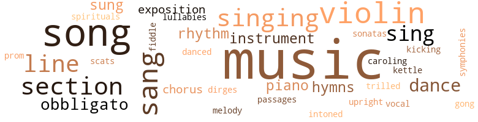

Mansart Builds a School, by Dubois, W.E.B. (1959)
205 music-related terms matched in this text.
Most frequent terms in this topic: music (64); violin (15); song (14); sang (13); singing (10)
caroling.n.01
Definition: singing joyful religious songs (especially at Christmas)
| word | sentence |
|---|---|
| Caroling | Burroughs read Jean Toomer 's " Song of the Son " -- Toomer , grandson of a black Senator : " O Negro slaves , dark purple ripened plums , Squeezed , and bursting in the pine-wood air , Passing , before they stripped the old tree bare One plum was saved for me , one seed becomes An everlasting song , a singing tree , Caroling softly souls of slavery , What they were , and what they are to me , Caroling softly souls of slavery . " |
chorus.n.01
Definition: any utterance produced simultaneously by a group
| word | sentence |
|---|---|
| chorus | A chorus of awed comment arose , but Jean continued : " But you see , I am from the colored Du Bignons . " |
| chorus | And then up from that black throng arose a chorus that shook the city with an obbligato of high human shrieks : " There was a mighty shouting that day ! " |
dance.n.01
Definition: an artistic form of nonverbal communication
| word | sentence |
|---|---|
| dance | " The vogue of the black and blackface minstrels in the late Nineteenth Century gradually gave place to talented Negro entertainers who launched into music , drama , and the dance . |
| dances | All Africa sings and dances and the roll of her drums comes down the centuries from Egypt to the Gold Coast . |
| dance | Some men say ( others as stoutly deny ) that in this red dance of fire , there floated at the front , a black and awful shape of One lynched and crucified , a black giant , blood-covered , in swirling smoke . |
dance.v.03
Definition: skip, leap, or move up and down or sideways
| word | sentence |
|---|---|
| danced | Black folk worked , laughed , whored , and gambled ; but also they sang and danced and stringed their instruments , and their music rolled around the world until Europe , Asia , and Africa knew Negro music and Harlem . |
| dance | She had come to college to learn and not to dance . |
| dance | He started to yell , dance and hug his Grandmaw - and then old man Cranston appeared at the front door . |
dirge.n.01
Definition: a song or hymn of mourning composed or performed as a memorial to a dead person
| word | sentence |
|---|---|
| dirges | It came as slave songs in work and religion ; it hummed in lullabies and dirges . |
exposition.n.04
Definition: (music) the section of a movement (especially in sonata form) where the major musical themes first occur
| word | sentence |
|---|---|
| exposition | One book of self-revelation was widely acclaimed : there was a study of Harlem and one of Philadelphia ; there was an exposition of the Negro family ; there was a widely acclaimed biography ; a probing into nasty Negro social depths , which whites liked ; two good novels and two broad anthologies . |
| exposition | There was a rapid exposition of the school budget . |
gong.n.01
Definition: a percussion instrument consisting of a metal plate that is struck with a softheaded drumstick
| word | sentence |
|---|---|
| gong | Streets were fdled with pictures , clothes , cabinets , chairs , while scores of people sank to the pavements and the gong of ambulances mingled with the ever-rising clang of firebells . |
hymn.n.01
Definition: a song of praise (to God or to a saint or to a nation)
| word | sentence |
|---|---|
| hymns | She picked out the pure melody of the older hymns ; she found the tragedy of the work-songs ; she sensed what Burleigh and Dett were doing to develop new music on this ancient and utterly beautiful foundation . |
| hymns | He knew what opposition this would arouse from the older members at hearing a " fiddle " in the sanctuary of God ; from the more modern members at having the music of old-fashioned revival orgies replace the more modern " Gospel hymns . " |
| hymns | ' Shall I be carried to the skies ' - " But a grim voice in the audience growled : " Do n't want no more them God-damned hymns . " |
kettle.n.04
Definition: a large hemispherical brass or copper percussion instrument with a drumhead that can be tuned by adjusting the tension on it
| word | sentence |
|---|---|
| kettle | Ovah goes the kettle . |
kick.v.04
Definition: kick a leg up
| word | sentence |
|---|---|
| kicking | But this business of kicking them and pushing them around and killing them now and then in order to get our work done , wo n't do . |
lullaby.n.01
Definition: a quiet song intended to lull a child to sleep
| word | sentence |
|---|---|
| lullabies | It came as slave songs in work and religion ; it hummed in lullabies and dirges . |
melody.n.02
Definition: the perception of pleasant arrangements of musical notes
| word | sentence |
|---|---|
| melody | She picked out the pure melody of the older hymns ; she found the tragedy of the work-songs ; she sensed what Burleigh and Dett were doing to develop new music on this ancient and utterly beautiful foundation . |
music.n.01
Definition: an artistic form of auditory communication incorporating instrumental or vocal tones in a structured and continuous manner
| word | sentence |
|---|---|
| music | " Well , it not only already has a hundred and fifty thousand Negroes , but it is a center of expression in music and art such as we never have had . " |
| music | " The vogue of the black and blackface minstrels in the late Nineteenth Century gradually gave place to talented Negro entertainers who launched into music , drama , and the dance . |
| music | The vogue of this new Negro music and drama swept the town and fed racial jealousy . |
| music | But the greatest occurrence of this era was the Harlem Renaissance ; the sudden flowering above the music and dancing of the Sons of Laughter of a distinct Negro American literature and art centering in Harlem . |
| music | It was in music that Negro genius was first recognized in America and in the world . |
| music | Her music and rhythms were transported to America where they were re born in new reincarnation . |
| music | And so by fateful chance the Negro folk-song - the rhythmic cry of the slave - stands today not simply as the sole American music , but as the most beautiful expression of human experience born this side the seas . |
| music | Negro music enveloped the United States . |
| music | Then Negroes and whites began to build a new music on this foundation : Burleigh , Dett , Rosamund Johnson and Still . |
| music | There is the Fauset cycle of colored Philadelphia ; and Fisher 's slight but precious vignettes ; the Trombones of Johnson and Harlems of McKay ; and many thoughts about Negro music , work , play , and sorrow songs . |
| music | Black folk worked , laughed , whored , and gambled ; but also they sang and danced and stringed their instruments , and their music rolled around the world until Europe , Asia , and Africa knew Negro music and Harlem . |
| music | Black folk worked , laughed , whored , and gambled ; but also they sang and danced and stringed their instruments , and their music rolled around the world until Europe , Asia , and Africa knew Negro music and Harlem . |
| music | Sojourner did not count although she seemed interested in music . |
| music | It was really a rather tremendous problem , including the practical questions as to how much should be spent on laboratories of physics and chemistry , what time should be given to history and sociology ; should there be courses in music and drawing , and so forth and so on . |
| Music | Music united all human beings , especially the Negro folk songs . |
| music | To Sojourner , Mansart had paid little attention until almost by accident he discovered her love of music . |
| music | Mansart determined that he would cultivate this strange child 's music when he had time . |
| music | She had never read much ; she disliked sewing , she found no joy in gardening or music . ' |
| music | Bruce is here and rather uncertain , and Sojourner as shy as usual , although her interest in music is increasing rapidly . |
| music | So at last , a ten-room house was finished , with porches , bedrooms , guest rooms and three baths ; a large dining room and breakfast nook , and a fully equipped kitchen , a study , a music room , and lawns with shrubbery and flowers . |
| music | He would like to have books and see pictures and hear music . |
| music | There was conversation and music . |
| music | There was one bond between them , not discovered for many years , and that was their mutual love of music , particularly of the Negro folk songs . |
| music | Then she learned to drum out accompaniments to his singing on the old piano , and while she knew little music , she had an extraordinary sense of tone and rhythm . |
| music | She tried it for several months , and then , gathering together her savings , went down to a second-hand music store in town and the proprietor sold her what was in fact an excellent violin but one which he was glad to get rid of because it had been so long on his hands . |
| music | He came to America with the idea that here he would find musical appreciation , especially among the Negroes , in whose music he had long delighted . |
| music | Naturally , he was disappointed , particularly when he went to the South and began to inquire into Negro music . |
| music | Then she closed her eyes and played one strain , one of those inimitable bits of pure music which the soul of the slave evolved in his days of martyrdom . |
| music | She played it simply , unerringly - a stream of utter music . |
| music | He had , at last , knowledge of a music which he had only glimpsed before and yearned for , and the two went to work with a will . |
| music | Some of Herr Rosenfels ' rich white supporters came to his studio one afternoon to arrange for him to furnish music for a soiree . |
| music | They heard heavenly music and burst in without ceremony . |
| music | However , it was evident to Manuel Mansart that he would simply be courting trouble if he continued to hire this white man to teach music in his school , especially since he had been teaching white children in the city . |
| music | The family , and especially her father , were astonished at her ability to play and her interpretation of music . |
| music | At Macon , he met Sojourner Mansart , not as a woman but as a musician ; because buried deep within Roosevelt Wilson 's soul was a love of music and of drama . |
| music | But the music gripped him . |
| music | It occurred to him that a house with Sojourner at the head , and music in the heart , would have certain attractions and would help his whole life . |
| music | But now he was thrilled by the music she played . |
| music | But he drew her gradually into the church music . |
| music | She stood breathless and preoccupied , filled with the memory of the music . |
| Music | Music had veiled the manhood of this man from her eyes . |
| music | I want you to be my wife , to come and take charge of my home and to have time for your music and for friendship among people who need music . |
| music | I want you to be my wife , to come and take charge of my home and to have time for your music and for friendship among people who need music . |
| music | Your music will charm all that away . " |
| music | Sojourner began to develop her ideas about Negro music . |
| music | She picked out the pure melody of the older hymns ; she found the tragedy of the work-songs ; she sensed what Burleigh and Dett were doing to develop new music on this ancient and utterly beautiful foundation . |
| music | He knew what opposition this would arouse from the older members at hearing a " fiddle " in the sanctuary of God ; from the more modern members at having the music of old-fashioned revival orgies replace the more modern " Gospel hymns . " |
| Music | He preached a sermon on " The Music of the Slaves , " and then said that his wife would play . |
| music | She raised her violin but kept her head lowered until its music began to creep out , and then quickly she threw her head back and thrust up her chin . |
| music | She lifted the violin level to her shoulders - and then perhaps the audience did not hear so wonderful a music as they seemed to . |
| music | Into that music went all the woman 's soul . |
| music | Perhaps none will ever know just what it was they heard in music that day , but that they heard the utmost none doubted . |
| music | She played until she almost swayed on her feet , and the music died away . |
| music | She had made music there and a little beginning in pictorial and plastic art . |
| music | It was in Birmingham that Sojourner , to her surprise , met again that Herr Max Rosenfels who had first taught her music and then had himself taught at the State College until dismissed , when he went to New York . |
| music | Rosenfels was traveling on a fellowship to collect Negro music , and just how this happened he was eager to tell . |
| music | We talked about music and voices . |
| music | But since the director was going to have a luncheon for some of his rich donors , with Herz and Toscanini present , and others who were really connoisseurs of music , I had my singers in the dining hall behind the great curtain . |
| music | The richest and most ornate lady had her mind not simply on music and the need of a new opera house . |
| music | The roll of that great and unrivalled music was magnificent . |
| music | From that day , Sojourner knew that Negro music was not simply her pleasure . |
| music | Its gilded magnificence of tapestry and gold , crystal and silver ; the velvet of its carpet , the carving of its furniture and sweet music of its organs , bands and orchestras rose and dove into the grey and singing waters until straight down it dashed to the ocean 's floor and mingled with the rusted ribs and bleached bones of the great Armada sunk four hundred years before . |
| music | Behind , above , rose the White Throne , shimmering with jewels , pulsing with music . |
| music | It was a scheme directly to subsidize writers and painters , to furnish music and drama not for private profit but for the value of the result in itself , as artistic accomplishment . |
| music | They produced music for millions of listeners , and experimented in new forms and horizons in all the arts . |
| music | Shirley Graham interrupted her music course at Oberlin and gave a city opera in Cleveland . |
| music | No poverty , homes for all , no fear of age , children in school , free music and theater , good food , and all men daring to say what they think . |
musical_instrument.n.01
Definition: any of various devices or contrivances that can be used to produce musical tones or sounds
| word | sentence |
|---|---|
| instruments | But this was strongly barred ; this was not individual effort but appointment to laboratories , with materials and instruments furnished . |
| instruments | Black folk worked , laughed , whored , and gambled ; but also they sang and danced and stringed their instruments , and their music rolled around the world until Europe , Asia , and Africa knew Negro music and Harlem . |
| instrument | It happened almost by accident that she found the instrument suited to her taste , and that was the violin , hidden in the attic , which the uncle who was killed in France had once owned and discarded . |
obbligato.n.02
Definition: a part of the score that must be performed without change or omission
| word | sentence |
|---|---|
| obbligato | He sat in his office on the fourth floor of the City Hall and looked rather helplessly out of the window across the forest of roofs with chimneys in the background , all wavering in the summer heat an obbligato of curiously divergent and ugly sounds . |
| obbligato | And then up from that black throng arose a chorus that shook the city with an obbligato of high human shrieks : " There was a mighty shouting that day ! " |
| obbligato | " At last we had all taken it up , and she she sang the interlude and obbligato : ' Strike and never tire , strike and never tire ! |
| obbligato | Like an obbligato heard faintly and indistinctly above the turmoil of his own life ran this vast Russian tragedy : the death of Rasputin in December ; the abdication of the Czar in the Spring of 1917 and in April a new Name , Lenin . |
passage.n.06
Definition: a short section of a musical composition
| word | sentence |
|---|---|
| passages | There were essays - short ways of saying what caste is , like those passages from " Souls of Black Folk . " |
piano.n.01
Definition: a keyboard instrument that is played by depressing keys that cause hammers to strike tuned strings and produce sounds
| word | sentence |
|---|---|
| piano | Often , as they sang , Sojourner found that she could accompany him on the almost unused piano . |
| piano | Then she learned to drum out accompaniments to his singing on the old piano , and while she knew little music , she had an extraordinary sense of tone and rhythm . |
| piano | They wanted their children taught the piano or the organ . |
promenade.n.01
Definition: a formal ball held for a school class toward the end of the academic year
| word | sentence |
|---|---|
| prom | The main topic became , to Jean 's disgust , why she had refused the bid of a Cabot to the Tech prom . |
rhythm.n.04
Definition: the arrangement of spoken words alternating stressed and unstressed elements
| word | sentence |
|---|---|
| rhythms | Her music and rhythms were transported to America where they were re born in new reincarnation . |
| rhythm | Then she learned to drum out accompaniments to his singing on the old piano , and while she knew little music , she had an extraordinary sense of tone and rhythm . |
| rhythm | She had entirely forgotten the beast of prey and sensed only rhythm and tone - the ecstasy of that world joy that comprehended neither dirt nor mist , fn this world of sound there was no evil nor terror , only communion of souls in common dreams . |
scat.n.01
Definition: singing jazz; the singer substitutes nonsense syllables for the words of the song and tries to sound like a musical instrument
| word | sentence |
|---|---|
| scats | In the Negro schools there were 12,500 pupils and scats for less than half of them . |
section.n.01
Definition: a self-contained part of a larger composition (written or musical)
| word | sentence |
|---|---|
| section | On the third day when the hoodlums tried to invade and burn the Negro section , the Negroes arose , armed with guns and grenades . |
| section | In the same month in Long View , Texas , several white men were shot when they went into the Negro section of the town searching for a Negro school teacher who was accused of sending a release to a Negro newspaper concerning a lynching . |
| section | A mob poured into the Negro section , burned homes , flogged the Negro school principal on the street , and ran several leading Negro citizens out of town . |
| section | It was simply flatter in cross section , much flatter than that of straight Mongolian hair and considerably flatter than that of ordinary European hair . |
| section | " This is a poor white town , and a poor white section . |
| section | The public schools of New York were bad , unless one lived in some exclusive section with the best equipment and selected teachers . |
| section | He bought a corner lot on the main thoroughfare , running out from the city past the old colored section and then past the school and the new plantation . |
| section | In Chicago , no areas in the city were harder hit than the Negro section . |
| section | They put the old colored woman in the " Jim Crow " section of the train that rolled from south Georgia toward Atlanta , and landed days afterward in New York . |
| section | The flat was in a crowded section and on a dirty side street , but inside it was a neat place . |
sing.v.02
Definition: produce tones with the voice
| word | sentence |
|---|---|
| sang | A Black Patti sang before a president , and a Black Swan sang before Queen Victoria . |
| sang | A Black Patti sang before a president , and a Black Swan sang before Queen Victoria . |
| sings | All Africa sings and dances and the roll of her drums comes down the centuries from Egypt to the Gold Coast . |
| sings | A tall black boy expressed bitter disdain for the oppresssor : " The painted beauty sings thy songs . |
| sung | O black slave singers , gone , forgot , unfamed , You - you alone , of all the long , long line Of those who 's sung untaught , unknown , unnamed , Have stretched out upward , seeking the divine . " |
| sang | Langston Hughes , laughing , brilliant , and beautiful , sang : " Bathed in the Euphrates when dawns were young . |
| sing | " Inscrutable His ways are and immune To catechism by a mind too strewn With petty cares to slightly understand What awful brain compels His awful hand ; Yet do I marvel at this curious thing : To make a poet black , and bid him sing ! " |
| sang | Black folk worked , laughed , whored , and gambled ; but also they sang and danced and stringed their instruments , and their music rolled around the world until Europe , Asia , and Africa knew Negro music and Harlem . |
| sang | Once in a while , they sang together and both loved the Negro folk songs at which the rest of the family laughed . |
| sang | Often , as they sang , Sojourner found that she could accompany him on the almost unused piano . |
| sang | They listened to the small radio at home when anything worth listening to appeared and they sang together ; Mary with her lovely soprano and Revels with his low , fine bass , when he was not too tired . |
| sang | Sojourner sometimes sang with him in her little voice . |
| sang | At first , he attended Negro churches and was entranced at their group singing when they sang the " Spirituals " and not the " Gospel " hymns . |
| sing | And there I asked permission to let them sing , unseen , the old quartet from '' IlTrovatore . ' |
| sang | They sang the ' Miserere , ' and it seems to me that it had never been so well sung . |
| sung | They sang the ' Miserere , ' and it seems to me that it had never been so well sung . |
| sung | Certainly , I know it could not have been sung better . |
| sing | " They stir the mass and grin and sing as it steams . |
| sang | " At last we had all taken it up , and she she sang the interlude and obbligato : ' Strike and never tire , strike and never tire ! |
| sang | The birds twittered and sang as they ate . |
| sing | Let us sing . |
| sing | They began to sing as they started away . |
| sang | She sang : " Happy days have come again ! " |
singing.n.01
Definition: the act of singing vocal music
| word | sentence |
|---|---|
| singing | Burroughs read Jean Toomer 's " Song of the Son " -- Toomer , grandson of a black Senator : " O Negro slaves , dark purple ripened plums , Squeezed , and bursting in the pine-wood air , Passing , before they stripped the old tree bare One plum was saved for me , one seed becomes An everlasting song , a singing tree , Caroling softly souls of slavery , What they were , and what they are to me , Caroling softly souls of slavery . " |
| singing | I heard the singing of the Mississippi wnen Abe Lincoln went down to New Orleans , and I 've seen its muddy bosom turn all golden in the sunset . |
| singing | The Negroes overflowed past the depot along Mitchell to Whitehall , singing and cheering . |
| singing | Then she learned to drum out accompaniments to his singing on the old piano , and while she knew little music , she had an extraordinary sense of tone and rhythm . |
| singing | At first , he attended Negro churches and was entranced at their group singing when they sang the " Spirituals " and not the " Gospel " hymns . |
| singing | A little young black woman sat sewing on the narrow porch and singing : " Way over in Jordan , Lord - " Then she saw the white man and opened her mouth to scream , but he was on her before she made a sound . |
| singing | Its gilded magnificence of tapestry and gold , crystal and silver ; the velvet of its carpet , the carving of its furniture and sweet music of its organs , bands and orchestras rose and dove into the grey and singing waters until straight down it dashed to the ocean 's floor and mingled with the rusted ribs and bleached bones of the great Armada sunk four hundred years before . |
| singing | His voice rolled back singing : ' Dey ai n't no hammer , ina dis mountain - Then it stopped . |
| singing | Its towns gleamed white and silver ; its wall ran up like singing waters that weep , and over all the golden sun poured down the Glory . |
| singing | The black crowd went singing ahead of them . |
sonata.n.01
Definition: a musical composition of 3 or 4 movements of contrasting forms
| word | sentence |
|---|---|
| sonatas | When he heard Sojourner Mansart play sonatas and bits of symphonies , when she interpreted Chopin on her violin , he was pleased . |
song.n.01
Definition: a short musical composition with words
| word | sentence |
|---|---|
| songs | It came as slave songs in work and religion ; it hummed in lullabies and dirges . |
| song | It became Negro ballad and folk song in " My Grandfather 's Clock , " " Carry Me Back to Old Virginny , " and " Listen to the Mocking Bird . " |
| songs | There is the Fauset cycle of colored Philadelphia ; and Fisher 's slight but precious vignettes ; the Trombones of Johnson and Harlems of McKay ; and many thoughts about Negro music , work , play , and sorrow songs . |
| song | We burst into vocal song with Hayes , Bledsoe and Anderson . |
| songs | A tall black boy expressed bitter disdain for the oppresssor : " The painted beauty sings thy songs . |
| Song | Burroughs read Jean Toomer 's " Song of the Son " -- Toomer , grandson of a black Senator : " O Negro slaves , dark purple ripened plums , Squeezed , and bursting in the pine-wood air , Passing , before they stripped the old tree bare One plum was saved for me , one seed becomes An everlasting song , a singing tree , Caroling softly souls of slavery , What they were , and what they are to me , Caroling softly souls of slavery . " |
| song | Burroughs read Jean Toomer 's " Song of the Son " -- Toomer , grandson of a black Senator : " O Negro slaves , dark purple ripened plums , Squeezed , and bursting in the pine-wood air , Passing , before they stripped the old tree bare One plum was saved for me , one seed becomes An everlasting song , a singing tree , Caroling softly souls of slavery , What they were , and what they are to me , Caroling softly souls of slavery . " |
| Song | Hear ye , hear ye , of the gifts of black men to this world , the Iron Gift , and Gift of Faith , the Pain of Humility and the Sorrow Song of Pain , the Gift of Freedom and of Laughter , and the undying Gift of Hope . |
| songs | There were Black Cross nurses , the African League banners and songs . " |
| song | With altar boys and waving of incense , with low song , he entered the great and ornate chandler of death , in cloth of gold , alb , surplice and mitre . |
| songs | Music united all human beings , especially the Negro folk songs . |
| song | But his plan was to wait for the mortgages to become due and then buy the place in at auction for a song . |
| songs | Once in a while , they sang together and both loved the Negro folk songs at which the rest of the family laughed . |
| song | He was always yapping about " his race " when he knew full well the Negroes would sell him out for a song . |
| songs | There was one bond between them , not discovered for many years , and that was their mutual love of music , particularly of the Negro folk songs . |
| songs | They thought this was because they were slave songs . |
| song | It was that song , " I Stood on the River of Jordan . " |
| song | With a song of joy , his mother died . |
| Songs | China , China of the Thousand Years , India the Unforgettable , they all step forward , they loom and march , they listen to a Songs of Songs . |
| Songs | China , China of the Thousand Years , India the Unforgettable , they all step forward , they loom and march , they listen to a Songs of Songs . |
| song | They hear that song of Paul Robeson : ' Go down , Moses , way down in Egypt Land " This next , then , is the room Africa , painted in black , dark , shining , lucid black , and here in front Robeson himself , shackled by the stars and stripes - stars in his eyes and stripes on his great broad " back . |
| song | Back , in his puzzled mind swam that strange song of the blacks : " Ezekiel saw a wheel - way up in the middle of the air ! |
| songs | When we were on the point of breaking , she came with one of those Negro songs . |
| song | She began the song : " Walk together children , do n't you get aweary . ' |
| song | But they say she was there an that she was dim and grey and that she talked low and tight with sobs between , till she came to that song ; my God that song : " I 've heard of a city called Heaven ! ' |
| song | But they say she was there an that she was dim and grey and that she talked low and tight with sobs between , till she came to that song ; my God that song : " I 've heard of a city called Heaven ! ' |
| song | Dirt and crowds and at the same time enthusiasm and song , signs of bursting life . |
spiritual.n.01
Definition: a kind of religious song originated by Blacks in the southern United States
| word | sentence |
|---|---|
| Spirituals | As a step toward this he proposed to have Sojourner play Spirituals in his regular church service . |
symphony.n.01
Definition: a long and complex sonata for symphony orchestra
| word | sentence |
|---|---|
| symphonies | When he heard Sojourner Mansart play sonatas and bits of symphonies , when she interpreted Chopin on her violin , he was pleased . |
tone.v.01
Definition: utter monotonously and repetitively and rhythmically
| word | sentence |
|---|---|
| intoned | As the tall dark bishop intoned she opened her black eyes . |
tune.n.01
Definition: a succession of notes forming a distinctive sequence
| word | sentence |
|---|---|
| line | Then one 's own life is always interesting , like " Up from Slavery , " and lives of other black folk - a long , long line . |
| line | There are the long line of anthologies , Braithwaite 's compilation of all American poetry which kept verse living when it tried to die ; those of black poetry down to the splendid " Caravan . " |
| lines | James Weldon Johnson , thin and sallow , recited his own lines : " There is a wide , wide wonder in it all , That from degraded rest and servile toil The fiery spirit of the seer should call These simple children of the sun and soil . |
| line | It was hard to make some students realize that studying was serious , and that it really did make a difference as to whether a student received 50 per cent in his marks or 75 per cent or 90 per cent ; that the difference , although difficult to come by accurately and subject to all sorts of mistakes , and sometimes actually meaningless , nevertheless was an attempt to measure the degree of application , of knowledge and of understanding ; and that they were in school to accomplish something in this line and not merely to play around with dreams . |
| line | While Mansart 's relation to his trustees , his students and teachers , and also toward the merchants and contractors , seemed in line of reaching normal relations , his contacts with white labor were still to be considered . |
| lines | It was perhaps a contradictory argument and drawing of rather tenuous lines , but Douglass Mansart asked no one else 's opinion . |
| lines | It had but a few lines , but this money was to buy a present for his mother . |
| line | But keep him in line . |
| line | Look , seel " They entered a cavern of a room , twenty-five feet high and forty feet wide , swathed in black curtains and covered , wall and ceiling , with paint of every fantastic color and every twist of curve and line . |
upright.n.02
Definition: a piano with a vertical sounding board
| word | sentence |
|---|---|
| upright | The one was hopelessly paralyzed and carrying about daily seventeen pounds of steel to hold his body upright . |
violin.n.01
Definition: bowed stringed instrument that is the highest member of the violin family; this instrument has four strings and a hollow body and an unfretted fingerboard and is played with a bow
| word | sentence |
|---|---|
| violin | It happened almost by accident that she found the instrument suited to her taste , and that was the violin , hidden in the attic , which the uncle who was killed in France had once owned and discarded . |
| violin | She tried it for several months , and then , gathering together her savings , went down to a second-hand music store in town and the proprietor sold her what was in fact an excellent violin but one which he was glad to get rid of because it had been so long on his hands . |
| violin | It was difficult , of course , to find anyone at Macon to teach her , especially on the violin . |
| violin | The colored people associated the violin with rather low class assemblies . |
| violin | Then she discovered that there was in town a very great teacher of the violin . |
| violin | She was a bit taken aback but said in her low , hesitant voice , " Perhaps I could - " and then the shawl fell away from the violin . |
| violin | He took , the violin up and looked at it . |
| violin | It was a good violin and he said to her with some surprise , " Can you play ? " |
| violin | She put the violin beneath her chin and grasped the bow . |
| violin | When he heard Sojourner Mansart play sonatas and bits of symphonies , when she interpreted Chopin on her violin , he was pleased . |
| fiddle | And so , to the astonishment and constant titter of some of the church members , the Reverend Roosevelt Wilson , the handsome and learned pastor of the First Baptist , married an ugly little black girl who played the fiddle . |
| violin | Her violin spoke low and yearning words of sorrow and laughter , and people paused at the drawing room door and begged leave to listen . |
| violin | She raised her violin but kept her head lowered until its music began to creep out , and then quickly she threw her head back and thrust up her chin . |
| violin | She lifted the violin level to her shoulders - and then perhaps the audience did not hear so wonderful a music as they seemed to . |
| violin | Her husband put his arms around her and wrapped the violin in with her body , and took her silently away . |
| violin | Take that Jew teaching " niggers " the violin down in Macon - run the " sheeny " out of town ! |
vocal_music.n.01
Definition: music intended to be performed by one or more singers, usually with instrumental accompaniment
| word | sentence |
|---|---|
| vocal | But on the other hand there had been drained off to the North since the Civil War and before , a mass of leadership and talent which made the black North vocal and active among Negroes to a decisive degree for racial leadership . |
warble.v.01
Definition: sing or play with trills, alternating with the half note above or below
| word | sentence |
|---|---|
| trilled | " Well , I never ! " trilled Mrs. Coypel . |
533 violence-related terms matched in this text.
Most frequent terms in this topic: fight (43); kill (30); fighting (29); murder (28); killed (21)
aggravation.n.02
Definition: unfriendly behavior that causes anger or resentment
| word | sentence |
|---|---|
| provocation | Of course , the provocation was great , but would war be good for business ? |
| provocation | After the Civil War and emancipation , the small town became the capital of oppression , with an armory , white militia and courts ; here reigned lynch law and the mob rode north , east , west or south at the slightest provocation . |
aggression.n.01
Definition: a disposition to behave aggressively
| word | sentence |
|---|---|
| aggression | For such ' colonial ' aggression and ' imperial ' expansion England , France , Germany , Russia and Austria are straining every nerve to arm themselves ; against such policies Japan and China are arming desperately . |
| aggression | Here was the threat of mob law and aggression from poor whites who envied the colored students the beautiful campus and good buildings which were expected ; from the rich who wanted good servants rather than lawyers and doctors would come added opposition . |
| aggression | He found that a calm , unsmiling look warded off much thoughtless aggression . |
| aggression | One must withdraw , also , as soon as the spirit of aggression subsided . |
anger.n.01
Definition: a strong emotion; a feeling that is oriented toward some real or supposed grievance
| word | sentence |
|---|---|
| anger | " Get out of the car , " he said in cold , impassive anger . |
| anger | Then his anger burst like a flame . |
| anger | The Director went red with anger . |
| ires | I pictured it raised and tilted over the heads of the ' Peacemakers , ' with the ( ires of Hell flaming up beneath it . |
anger.v.02
Definition: become angry
| word | sentence |
|---|---|
| angered | The occurrence startled and angered the colored people . |
| angered | He would have preferred quarters in one of the new type apartment houses but the delays in securing one , despite his influence and that of his friends , angered him . |
| angered | It angered him every time he saw it and thought of that cocky " nigger " who tried to buy and live on land next to his own home place , and then tried to kill him . |
animosity.n.01
Definition: a feeling of ill will arousing active hostility
| word | sentence |
|---|---|
| animosities | It is an accumulation of hates and animosities ; a clash of counter-strivings covering centuries . |
| animosity | " We believe that this nation and every part of it must come to admit that the gradual disappearance of inequalities between racial groups and the gradual softening of prejudice and hatred , is a sign of advance and not of retrogression and should be hailed as such by all decent folk and we think it monstrous to wage a political campaign in which the fading and softening of racial animosity and the increase of cooperation can be held up to the nation as a fault and not as a virtue . |
| animosity | His animosity had been concentrated on social intermingling in France and with drawn from the economic picture . |
assail.v.01
Definition: attack someone physically or emotionally
| word | sentence |
|---|---|
| assaulting | In July , 1919 , there were newspaper rumors of Negroes assaulting white women in the Capital . |
| assaulted | They beat Negroes on the streets , dragged them from streetcars and assaulted them . |
bandy.v.02
Definition: exchange blows
| word | sentence |
|---|---|
| bandied | There were white Du Bignons ; there were black Du Bignons ; and there were Creole Du Bignons who were neither black nor white , whose name and race gossip bandied but with peril . |
bayonet.n.01
Definition: a knife that can be fixed to the end of a rifle and used as a weapon
| word | sentence |
|---|---|
| bayonets | They kicked the Prince of Peace in the teeth and crowned him with bayonets . |
bleeding.n.01
Definition: the flow of blood from a ruptured blood vessel
| word | sentence |
|---|---|
| hemorrhage | He died of cerebral hemorrhage in 1922 , and 10,000 persons , escorted by the Ku Klux Klan , attended his funeral in South Georgia . |
bloodshed.n.01
Definition: the shedding of blood resulting in murder
| word | sentence |
|---|---|
| bloodshed | This is the verdict of more than three centuries of strife and bloodshed , and it is a verdict not lightly to be set aside . |
brawl.n.02
Definition: a noisy fight in a crowd
| word | sentence |
|---|---|
| free-for-all | Calling mob law to their aid and securing the cooperation of the American Legion and the Ku Klux Klan , the union men staged a riot which resulted in a free-for-all fight . |
bridle.v.01
Definition: anger or take offense
| word | sentence |
|---|---|
| bridled | Douglass bridled . |
| bridled | The lady from the South sniffed and bridled . |
bullying.n.01
Definition: the act of intimidating a weaker person to make them do something
| word | sentence |
|---|---|
| intimidation | This indicated armed resistance to segregation , insult and intimidation , and so far as possible it was arranged that there should be few sent South . |
| intimidation | We join heartily with the best conscience of the State , of the Nation , and of the civilized world in demanding a pure intelligent ballot , free from bribery , ignorance , fraud and intimidation . |
butcher.v.01
Definition: kill (animals) usually for food consumption
| word | sentence |
|---|---|
| butchered | Protestant fought Protestant ; Catholic killed Catholic ; Moslem murdered Moslem ; Jew electrocuted Jew ; and Buddhist butchered Buddhist , and all killed each other . |
cannon.n.04
Definition: heavy automatic gun fired from an airplane
| word | sentence |
|---|---|
| cannon | He called for Federal troops and five hundred were rushed from Camp Pike , armed with rifles , cannon , gas masks , hand grenades , bombs and machine-guns . |
contemn.v.01
Definition: look down on with disdain
| word | sentence |
|---|---|
| despised | Shuddering with tears he bayoneted young , struggling German boys and despised himself as he did it . |
| despised | It has been neglected ; it has been , and is , half despised , and above all has been persistently mistaken and misunderstood ; but notwithstanding , it still remains as the singular spiritual heritage of the nation and the greatest gift of the Negro people . " |
| despised | It was not a nation bursting into self-expression and applauding those who told its story and feelings best , but rather a group oppressed and despised within a larger group , whose chance for expression depended in large part on what the dominant group wanted to hear and were willing to support . |
| despised | She herself despised the blacks , had no faith in the possibility of their ever becoming civilized men . |
| despised | She was born into a world , and destined to live in it a half-century , which despised her color and not only declared but believed deeply that this color was an indication of inborn in-ferority . |
| despised | Not that Douglass liked or trusted the whites ; he hated them , and especially despised the poor whites . |
| despised | Instead of being a despised Negro , facing a hated lyncher , he became a man who had had some education and opportunity , who lived in comfort and respect , with much control over money and power ; and he was facing an ill-dressed and hard-pressed man who writhed under the results of toil , deprivation and pain ; who was desperately fighting his way up and trying to drag up with him his family , friends and race ; and who regarded Mansart as a cause of his disasters . |
| despised | He had been brought up to regard racial intermixture as the crime of white men or , in a colored man or woman , as cowardly betrayal of their people , a miserable crawling after those who despised you . |
| despised | He knew that the officer despised him and only came to him because he saw no other way out of his troubles . |
| despise | They believed that their colored employers must despise them and were too ready to resent any suspicion of superiority . |
| despised | Even her features were not really unpleasing , but exaggerated in a racial type which the world about her despised and ridiculed . |
| despise | How she must despise him ! |
crucify.v.01
Definition: kill by nailing onto a cross
| word | sentence |
|---|---|
| crucifying | Later , years later it seemed , he was dragged through the trenches across mud-washed fields back into a camp where the terrible , crucifying lice were driven from his body ; and finally , on the tossing misery of a ship , he started home . |
| crucified | When they pass by , Hail them , the Brave , for you now crucified ! " |
| crucify | They will crucify him . " |
| crucified | Some men say ( others as stoutly deny ) that in this red dance of fire , there floated at the front , a black and awful shape of One lynched and crucified , a black giant , blood-covered , in swirling smoke . |
cut.n.05
Definition: a wound made by cutting
| word | sentence |
|---|---|
| gashes | His back was crisscrossed with salt-sifted gashes made by great whips . |
dagger.n.01
Definition: a short knife with a pointed blade used for piercing or stabbing
| word | sentence |
|---|---|
| dagger | There remained a dagger in her heart because there were others less beautiful , less rich , and less aristocratic who sneered that there was other blood in her veins ; that it was indeed royal but that it came from a thousand years of rule among black chieftains of West Africa . |
destroy.v.04
Definition: put (an animal) to death
| word | sentence |
|---|---|
| destroyed | " We produced to destroy and destroyed to produce and paradox birthed maniac , made men murderers and women prostitutes and children foundlings and turned the world insane . |
| destroyed | Yet , we were an integral part of a world which had been gravely hurt ; near forty million men had been killed , wounded or lost ; uncounted property had been destroyed . |
| destroyed | John Pierce realized that Germany had lost an immense sum by war and had destroyed the wealth of others . |
draw.v.23
Definition: pull (a person) apart with four horses tied to his extremities, so as to execute him
| word | sentence |
|---|---|
| drawn | Once , when I first became president , Mr. Sykes 's came in with plans for the administration building all drawn up for my immediate acceptance . |
| drew | He drew up a new will . |
dudgeon.n.01
Definition: a feeling of intense indignation (now used only in the phrase `in high dudgeon')
| word | sentence |
|---|---|
| dudgeon | The former chief clerk had left in high dudgeon , and this presented a new problem to the office because she was related to alumni of the school and to prominent colored residents of Macon . |
eliminate.v.03
Definition: kill in large numbers
| word | sentence |
|---|---|
| eradicated | On the other hand , if the relation of industry to labor in general was to be overhauled and readjusted , if the whole relation of the farming industry to the other industry of the land was to be carefully readjusted with regard to prices , methods , machines and markets , if unemployment was to be eradicated by shorter hours , a minimum wage , the forbidding of child labor and the arrangement of old-age security , if these and similar measures were going to change radically the basis of American life , then the American Negro , barring gross discrimination , was going to have a " New Deal , " a new chance to improve his condition . |
elimination.n.05
Definition: the murder of a competitor
| word | sentence |
|---|---|
| elimination | It enters the wide fields of flood control , soil erosion , reforestation , elimination of agricultural use of marginal lands , and distribution and diversification of industry . |
engage.v.07
Definition: carry on (wars, battles, or campaigns)
| word | sentence |
|---|---|
| waged | On these the fight for African freedom is being waged . |
| waged | This was a source of continuing friction , and here Mansart waged his fiercest battles . |
| wage | " We believe that this nation and every part of it must come to admit that the gradual disappearance of inequalities between racial groups and the gradual softening of prejudice and hatred , is a sign of advance and not of retrogression and should be hailed as such by all decent folk and we think it monstrous to wage a political campaign in which the fading and softening of racial animosity and the increase of cooperation can be held up to the nation as a fault and not as a virtue . |
envy.n.01
Definition: a feeling of grudging admiration and desire to have something that is possessed by another
| word | sentence |
|---|---|
| envy | There was envy and jealousy about him . |
| envy | At the same time , no Negro institution so escaped the daily dictation of the whites , and the envy and interference of the poor whites , as the Negro church . |
| envy | For the first time , she saw a meaning to life which was more than enjoyment , more thrilling than clothes , and more inspiring than envy . |
ferociousness.n.01
Definition: the trait of extreme cruelty
| word | sentence |
|---|---|
| viciousness | She herself had seen the cruelty of boys and the viciousness of some men . |
fight.n.02
Definition: the act of fighting; any contest or struggle
| word | sentence |
|---|---|
| combat | Especially the question of Negro officers and Negro combat troops had to be faced . |
| fighting | He brought in a fighting , resisting spirit of which many were a little afraid . |
| fighting | He moved back and out of the way , but all that afternoon and long into the night he could hear the fighting , shrieking and cursing ; and men with bloody heads , black and white , moved along the streets . |
| fighting | But there was the old fighting spirit in her eyes . |
fight.n.05
Definition: a boxing or wrestling match
| word | sentence |
|---|---|
| fight | But after all , this fight in Europe might have its influence on the United States . |
| fight | " Let the ' niggers ' fight , " they said ; and they put practically every colored draftee into Class A ; while out of 815 white men called , 525 were exempted . |
| Fight | " Fight for my country ? |
| fight | For twenty years , the Crisis made a fight on a program aimed at civil and political rights and social equality . |
| fight | Three young boys recited in unison : " Symbolic mother , we thy myriad sons , Pounding our stubborn hearts on Freedom 's bars , Clutching our birthright , fight with faces set , Still visioning the stars ! " |
| fight | And so it was that in Harlem after the First World War , the American Negro , in a burst of brilliance , achieved his greatest step toward self-expression and organized fight for freedom . |
| fight | On these the fight for African freedom is being waged . |
| Fight | Here Mansart determined to make a Fight . |
| fight | If one were not careful , an interracial meeting would be an interracial fight . |
| fight | Here was the real fight and here must be no surrender . |
| fight | But Douglass reminded them of what was happening to the unions and how strong the fight against them and especially against the closed shop was . |
| fight | It bade fair to be a bitter and close fight . |
| fight | Calling mob law to their aid and securing the cooperation of the American Legion and the Ku Klux Klan , the union men staged a riot which resulted in a free-for-all fight . |
| fight | He made up his mind that life was a fight and particularly a fight with white people , in which the thinker who was not burdened wtih scruples had a chance to come out ahead . |
| fight | He made up his mind that life was a fight and particularly a fight with white people , in which the thinker who was not burdened wtih scruples had a chance to come out ahead . |
| fight | What I can not do is to surrender without a fight my right to freedom and happiness just because ignorant and bigoted Americans are determined to guide my life . |
| fight | He knew when he said this that instead of joining issue with Baldwin 's main thesis he had grabbed rather desperately at a side issue and made that his fight rather than the main question ; but he did not know just where to take his stand on the main question . |
| fight | He paid $ 10,000 to the Democratic machine and his election for a ten-year term was called a great triumph of the fight against the Color Line . |
| fight | Then , to the astonishment of white Arkansas , the Supreme Court of the United States allowed it The fight lasted four years and cost over $ 50,000 . |
| fights | Beautiful , logical , complete and right , until the worms , the vermin , the crawling manure pauses , stops , shrieks , fights , and overwhelms the world . |
| fight | You will view the new aspect of the Bastard Bitch , you will see the Latin Abortion again , and the great American Thief , as they all shriek and fight and kill . |
| fights | As Britain again fights Russia , as Germany again fights France , as Italy again fights Africa , as Spain fights itself , as America fights everybody and everybody fights America , while behind rises Black Eternity on a Christian Hell . |
| fights | As Britain again fights Russia , as Germany again fights France , as Italy again fights Africa , as Spain fights itself , as America fights everybody and everybody fights America , while behind rises Black Eternity on a Christian Hell . |
| fights | As Britain again fights Russia , as Germany again fights France , as Italy again fights Africa , as Spain fights itself , as America fights everybody and everybody fights America , while behind rises Black Eternity on a Christian Hell . |
| fight | It w ' as a fight of employer against laborer , and the poor against the poor , and of the rich against the rich . |
| fight | " There was much child labor , and despite a long fight , no bill against it could be forced through the legislature . |
| fights | Consider the record : the privilege of French nobility was wrong ; the poverty of the 19th century factory workers was unendurable ; Negro slavery was an anachronism ; colonial imperialism and democracy are incompatible ; yet the world fights valiantly for the Old ; rages mightily against Socialism ; strains every nerve to re-establish black slavery and now raises heaven and earth to retain the British Empire ; and all because we are crazy , yet think others are - " The keepers appeared with an ambulance . |
| fight | He realized the fight which the rich were making on the poor , the employers on the laborers . |
| fight | In 1926 , he joined the Communist Party and rose rapidly because of his fight against segregation and his energy as a trade-union organizer . " |
fight.v.02
Definition: fight against or resist strongly
| word | sentence |
|---|---|
| fighting | While fighting they needed food , clothes , munitions and cash . |
| fighting | Their own industries could not supply the demand since their laborers were fighting . |
| fight | The South , by and large , had no particular stomach to fight this war with or for the North , but the Atlanta Draft Board found a way out , as did other draft boards all over the South . |
| fighting | Black boys were soldiers of the Lord and fighting for the Kingdom . |
| fighting | They saw the fighting front of war . |
| fighting | Baker was irritated and growled that he was not fighting this war " to settle the Negro Problem . " |
| fight | A black man answered , " But you must settle enough of it to enable you to fight the war . " |
| fighting | Several hundred members of the mob crowded about , fighting for bits of his clothing and the rope . " |
| fight | Negroes must believe in themselves and fight for equality . |
| fighting | But a majority of the leaders of the Niagara Movement recognized that white cooperation in fighting anti-Negro prejudices was absolutely essential . |
| fight | If you will and can fight this sort of thing we certainly will not oppose you . |
| fight | But Jones , destined soon to displace Haynes and give form to the work of the Urban League , interrupted : " Nonsense , votes or no votes , we have got to fight the white trade unions and keep them from ruining industry with impossible demands ; if the Negro helps rescue industry , industry will see that he survives and prospers . " |
| fighting | Like men we 'll face the murderous , cowardly pack , Pressed to the wall , dying , but - fighting back ! " |
| fight | It is not , then , to make one race supreme That we must fight , but to make all men free . |
| fought | " On the other hand , intelligent Negroes know full well that a blow at organized labor is a blow at all labor ; that black labor today profits by the blood and sweat of labor leaders in the past who have fought oppression and monopoly by organization . |
| fighting | He had dropped the Negro , was half-hearted in fighting for white labor , and fulminated against Jews and the Catholic Church . |
| fight | The white unions did not dare fight this ; but they admitted as few Negroes as possible to as few kinds of work as possible , and none to white unions . |
| fought | The case was fought through the various state courts of Alabama , in which the branch NAACP was aided by other Alabama branches and the national office . |
| fighting | But soon white and colored people were fighting ; stones were hurtling through the air , angry cries arose and people began running . |
| fighting | Trolleys were torn from the lines ; people , particularly Negroes , were driven from the cars , and shooting and fighting began , back from the lakeshore and toward the west . |
| fighting | There was a pause again Tuesday morning , and Douglass began to think of leaving the city ; but from noon to midnight there came a strike on the streetcars which made it impossible for him to get to the depot ; and there was fighting down in the Loop , where stores of white businessmen were attacked and black men killed . |
| fought | Mitchell fought back , writhed out from under a criminal charge and bankrupted himself , even to selling his prized Stanley steamer auto , to pay every cent of his bank 's debts ! |
| fight | I am going to fight it here and in the North . |
| fight | Here your only chance , father , is to get the wealth of Georgia back of this college , and in the North where I 'm going to work I am going to do all I can to get the Negroes to fight the white unions . " |
| fighting | Instead of being a despised Negro , facing a hated lyncher , he became a man who had had some education and opportunity , who lived in comfort and respect , with much control over money and power ; and he was facing an ill-dressed and hard-pressed man who writhed under the results of toil , deprivation and pain ; who was desperately fighting his way up and trying to drag up with him his family , friends and race ; and who regarded Mansart as a cause of his disasters . |
| fighting | He seemed more disturbed and eager : " Greed nailed the world together into one snarling , scratching , fighting ball of human hatreds . |
| fought | " The Son of God went forth to War , a kingly crown to gain ; only he was twins , he was quintuplets ; he fought himself . |
| fought | Protestant fought Protestant ; Catholic killed Catholic ; Moslem murdered Moslem ; Jew electrocuted Jew ; and Buddhist butchered Buddhist , and all killed each other . |
| fighting | The police were notified and kept watch for a month , until after that Battle of Flanders where black Africans fighting for France walked by tens of thousands straight into the mouths of German artillery , raising their ancient war cries in a dozen tongues until no black man lived and silence reigned . |
| fighting | " Ends fighting Ends ; War ending War ; Good to stop Evil ; Evil to birth God . |
| fight | " He will fight ! " |
| fight | " He will not fight , unless it is for something he regards as worth fighting for . |
| fighting | " He will not fight , unless it is for something he regards as worth fighting for . |
| fight | For that he 'd never fight . |
| fought | We declared that we never fought to defend slavery or made every effort to restore it . |
| fighting | That white world today is fighting itself for a new division of the no wage area . |
| fighting | Until men stop fighting because none are left to fight . |
| fight | Until men stop fighting because none are left to fight . |
| fighting | Perry was dangerously in debt , and was fighting for time . |
| fights | As Britain again fights Russia , as Germany again fights France , as Italy again fights Africa , as Spain fights itself , as America fights everybody and everybody fights America , while behind rises Black Eternity on a Christian Hell . |
| fights | As Britain again fights Russia , as Germany again fights France , as Italy again fights Africa , as Spain fights itself , as America fights everybody and everybody fights America , while behind rises Black Eternity on a Christian Hell . |
| fights | As Britain again fights Russia , as Germany again fights France , as Italy again fights Africa , as Spain fights itself , as America fights everybody and everybody fights America , while behind rises Black Eternity on a Christian Hell . |
| fought | The black union had fought back . |
| fought | We fought Negro skilled workers and Negro capitalists . |
| fighting | Negroes of the South poured into the North after the World War , and there had been fighting , hatred and murder in East SL Louis , in Chicago , and elsewhere . |
| fight | You can fight capital with black labor , I tell you . |
| fighting | " I did n't first , but I got to studying it and now I 'm fighting for it , " Talmadge replied . |
| fight | " But union labor is growing strong in cities , and ready to fight . |
| fighting | The labor unions were fighting a fierce battle ; socialism was growing within , and the IWW had been formed without and carried out that famous textile strike in Lawrence , Massachusetts . |
| fighting | The employers were fighting the regular unions with " company " unions . |
| fighting | She was engaged not to a governor from whose mansion she could thumb her nose at Atlanta society , but to a labor leader at a critical time when the unions were fighting for life , and leading them was neither lucrative nor safe . |
| fought | They are talented and for several years now have fought with vigor and fine courage , and their barbed arrows of understanding , their loaded documents , are causing the Roosevelt cabinet many an anxious hour . " |
| fought | All the firemen and policemen of Atlanta , all the soldiers from Fort McPherson fought the flames . |
| fight | But before this act had been thoroughly tried out , Industry began to fight seriously against the " Red in the White House . " |
| fight | Even with it , we can in part exclude Negro labor , but not for long if socialism triumphs and Negroes fight their way into the unions . |
| fight | " I tried to tell Roosevelt that poor relief and helping bankrupt farmers was not the way to fight depression . |
| fight | We must fight to the finish , even if we put mankind in jeopardy of death . " |
| fighting | I prophesy , I stand and swear , that Britain and Europe and our America will yet be saved from Nazis and Fascists by the Communists , fighting under Stalin . |
| fight | Shall we send them abroad to represent America and fight for us and tell foreigners how we treat them ? ' " |
| fight | Susan screamed : " They 're taking my babies to fight for their country ; what country ? |
flog.v.01
Definition: beat severely with a whip or rod
| word | sentence |
|---|---|
| flogged | A mob poured into the Negro section , burned homes , flogged the Negro school principal on the street , and ran several leading Negro citizens out of town . |
frustration.n.03
Definition: a feeling of annoyance at being hindered or criticized
| word | sentence |
|---|---|
| frustration | Tom Watson , after his fierce anti-Negro campaign which helped bring the Atlanta riot in 1906 , had gone into retirement for a decade in disappointment and frustration . |
fury.n.01
Definition: a feeling of intense anger
| word | sentence |
|---|---|
| fury | This aroused the colored editor almost to fury . |
| fury | So that , after all the fuss and fury , about the only thing that came out of the industrial training program was cooking and sewing , so as to furnish competent cooks and maids for white households . |
| rage | He was in a cold , bitter rage . |
| fury | The sight of that little black devil trampling his growing cotton and defiling the sanctity of his own front yard aroused him to fury . |
gag.v.06
Definition: cause to retch or choke
| word | sentence |
|---|---|
| chokes | It chokes me . |
| choked | Mansart choked and started off : " Collins , perhaps you will not understand this and it 's hard for me to talk . |
| choked | Some day , on the bones of the black Della dead , a new white peasantry would be born , unless the big Monopoly Farm choked even that . |
gall.v.02
Definition: irritate or vex
| word | sentence |
|---|---|
| irked | He was especially irked by the small progress made by the Negro schools because of small funds . |
grudge.n.01
Definition: a resentment strong enough to justify retaliation
| word | sentence |
|---|---|
| grievance | We brought our grievance to the notice of newspapers and churches . |
gun.n.01
Definition: a weapon that discharges a missile at high velocity (especially from a metal tube or barrel)
| word | sentence |
|---|---|
| guns | And yet the American peace movement thinks it bad policy to take up this problem of machine guns , natives and rubber , and wants ' constructive ' work in ' arbitration treaties and international law . ' |
| guns | Moved suddenly up to the front to work with defensive weapons , he heard one night that thunder of the great guns which no one who heard ever forgot . |
| gun | The Negroes went , an untrained , inexperienced mass , up into the hills and forests of the Argonne , and met withering machine gun fire . |
| guns | On the third day when the hoodlums tried to invade and burn the Negro section , the Negroes arose , armed with guns and grenades . |
| guns | " The lowly white Jesus of the West will turn the other cheek and kick his black brother in the jaw so hard that all his bloody broken teeth will seed the earth and popup as well-oiled machine guns , spraying death on vermin called Men . |
| gun | " Wait , " said one as he unslung his gun . |
| gun | He started to yell but the gun roared and his head was a red pulp . |
| gun | The waiting men on the bank above started and yelled , but the little black man with the gun in one hand and his baby in the other plunged across the creek . |
| gun | One swung and raised his gun . |
| guns | Those poor whites who wanted to kill " niggers , " steal their property and settle on their land had the guns and horses and wore the badges of the law . |
| guns | White labor stuck to its guns . |
| guns | There was one pitched battle with guns and gas in Flint , Michigan . |
| guns | The roar of dynamite was like the blast of the great guns far to the west on the allied front . |
| guns | Shall we train them as we do whites and put guns in their hands ? |
hate.n.01
Definition: the emotion of intense dislike; a feeling of dislike so strong that it demands action
| word | sentence |
|---|---|
| hate | Just as in 1906 , a decade of race hate had turned Atlanta into riot and murder , so on a national scale World War turned in America into Race War . |
| hatred | There were other riots , in Knoxville , Tennessee and Omaha , Nebraska ; and not simply race war - race hatred and sadism which made one of despair of civilization . |
| hate | These plays increased race hate and threatened riots . |
| hatred | " For many years your organizations have made public { profession of your interest in Negro labor , of your desire to lave it unionized , and of your hatred of the black ' scab . ' |
| hatred | To such Georgians we appeal in this crisis : Race antagonism and hatred have gone too far in this State ; let us stop here ; let us insist that we go no further ; let us countenance no measure or movement calculated to increase that deep and terrible sense of wrongdoing under which so many today labor . " |
| hate | Here swarmed a group of husky , red-blooded youth , with great eyes too easily filled with hate ; white police could be called but they brought warrants , walked warily , and watched ; they were careful to follow the forms of law . |
| hatred | As he died he said : " I am being sacrificed today upon the altar of passion and racial hatred that appears to be the bulwark of America 's civilizaiton . |
| hate | But that one of the great cities of the West could for a week give itself up to murder , race hate and disorder , was absolutely unexpected . |
| hate | But as an evil , aggressive , cruel and resentful cloud of hate and hurt from which there was no escape - of this neither of them dreamed . |
| hatreds | He seemed more disturbed and eager : " Greed nailed the world together into one snarling , scratching , fighting ball of human hatreds . |
| hate | The rapt Buddha of the East , reincarnate in Christian machines , seize arms and beat Nirvana into the brains of Moslems , while Moslems mad with hate preach Holy War . |
| hate | But to get on the trail of a running Negro , mad with fright or hate ; to see him twist and turn , to hear him curse and pray - by God that was sport unequalled in modern life ! |
| hate | Girls were going to hell ; democratic methods of control were failing ; race and religious hate were rife ; war and war psychoses were spreading ; and revolution against Wrong threatened with force . |
| hatred | But , Citizens of America , bad as religious hatred and evil personal gossip are , they have not the seeds of evil and disaster that lie in continued , unlimited and unrestrained appeal to race prejudice . |
| hatred | The emphasis of racial contempt and hatred which was made in this campaign is an appeal to the lowest and most primitive of human motives , and as long as this appeal can successfully be made , there is for this land no real peace , no sincere religion , no national unity , no social progress , even in matters far removed from racial controversy . |
| hatred | " We believe that this nation and every part of it must come to admit that the gradual disappearance of inequalities between racial groups and the gradual softening of prejudice and hatred , is a sign of advance and not of retrogression and should be hailed as such by all decent folk and we think it monstrous to wage a political campaign in which the fading and softening of racial animosity and the increase of cooperation can be held up to the nation as a fault and not as a virtue . |
| hatred | " We are asking , therefore , in this appeal , for a public repudiation of this campaign of racial hatred . |
| hatred | " The prosperity of Negro capital , even with its losses , fanned the flame of race hatred between Negroes and poor whites . |
| hatred | Negroes of the South poured into the North after the World War , and there had been fighting , hatred and murder in East SL Louis , in Chicago , and elsewhere . |
| hatred | His hatred of Negroes and opposition to their advancement had been increased rather than diminished by his experience . |
| hate | They not only knew little of human history , but less of working conditions in places other than their communities , or of life in groups which they did not know or did not see ; or even of neighbors from whom they were rigidly separated by iron bars of prejudice and inherited hate . |
| hate | Yet he glared , unconquered and unsubdued above it all , and his voice roared up like a deep growl of unforgetting and vindictive hate . |
| hate | He felt trapped and bound amid hate and want . |
| hate | Moreover , the prospective Negro vote was also bound to be strong in cities , and the race hate of small white farmers could be depended on to hold such a new crop of voters in check . |
hate.v.01
Definition: dislike intensely; feel antipathy or aversion towards
| word | sentence |
|---|---|
| hate | The poor black boys worked their hearts out so that white men could hate and kill each other in singular compensation . |
| hate | For a real literature demands truth and real feelings and not submission to what others want to hear , especially when most of these " others " hate the ground on which these black artists walk , and pay well for any caricature which tickles their own false and cheap ego . |
| hated | He hated the path , but after all , black money was as good as white . |
| hated | Then again ( and this was more personal ) , he hated patronage ; he hated to ask things from people in power ; he thought lie had a right to expect voluntary initiative on the part of the powerful if they saw in him any indications of usefulness or success . |
| hated | Then again ( and this was more personal ) , he hated patronage ; he hated to ask things from people in power ; he thought lie had a right to expect voluntary initiative on the part of the powerful if they saw in him any indications of usefulness or success . |
| hate | He knew ' he would hate that kind of thing and be very uncomfortable and therefore he shut his lips rather grimly and the subject was not opened again until after the miraculously increased importance of his little daughter 's education . |
| hate | If there is built up in America a great black bloc of non-union laborers who have a right to hate unions , all laborers , black and white , must eventually suffer . |
| hate | I hate white folks . " |
| hated | She was not unconscious of the fact that these her people would not automatically or easily accept her , veiled as she was in a hated color of skin . |
| hate | She did not hate her black blood ; she loved it , because she had loved her grandmother , Marie , and her friend , Sarah . |
| hate | I should hate to take it . " |
| hated | The social intercourse of boys and girls had to be watched and curbed in ways that Manuel hated but had to follow . |
| hated | Not that Douglass liked or trusted the whites ; he hated them , and especially despised the poor whites . |
| hated | Instead of being a despised Negro , facing a hated lyncher , he became a man who had had some education and opportunity , who lived in comfort and respect , with much control over money and power ; and he was facing an ill-dressed and hard-pressed man who writhed under the results of toil , deprivation and pain ; who was desperately fighting his way up and trying to drag up with him his family , friends and race ; and who regarded Mansart as a cause of his disasters . |
| hated | That policeman was dead and the white girl - she had passed from a hated obsession and had become a lovely memory ; but dead , or never , never born ; never born . |
| hated | He hated them as fellow-officers , but when asked to testify against the accused Negro officers in the Argonne , he flatly refused . |
| hated | He hated theft . |
| hates | It is an accumulation of hates and animosities ; a clash of counter-strivings covering centuries . |
| hated | " I would have hated that . |
| hated | Unlike the Mansarts , he neither liked nor hated white folk , but viewed them with unprejudiced eyes . |
| hated | He hated the climate , the snow , the cold , the thawing . |
| hated | And now , suddenly , and almost without consultation , she was transplanted to a great city , Birmingham , in Alabama , and she hated it . |
| hated | Some feared blood and hated riot , but how could it be avoided ? |
| hated | She hated " niggers . " |
| hated | Scroggs loved the city and hated it and feared it . |
| hated | He was a rabble-rouser with a bitter tongue , and was feared and hated on the one hand and idolized on the other . |
| hated | And from that day , Joe Scroggs felt that he belonged to the laboring class and he hated the aristocracy . |
hostility.n.01
Definition: a hostile (very unfriendly) disposition
| word | sentence |
|---|---|
| hostility | But he did shrink and with horror from what he knew she must suffer if she married him - the public insult , the loss of old friends and making no new ones , the hostility of police and employers . |
hostility.n.02
Definition: a state of deep-seated ill-will
| word | sentence |
|---|---|
| antagonism | To such Georgians we appeal in this crisis : Race antagonism and hatred have gone too far in this State ; let us stop here ; let us insist that we go no further ; let us countenance no measure or movement calculated to increase that deep and terrible sense of wrongdoing under which so many today labor . " |
| enmity | But this might cause some white contractor or merchant to incur his enmity . |
| enmity | He attributed , rightly , riots such as that in East St. Louis to the enmity of white labor , but he would not admit that unless Negroes joined the white unions they had no chance to rise in the industrial world . |
| antagonism | He had none of the churlish resentment and antagonism of most young Negroes and did little courteous actions quite unconsciously , that disarmed the whites and brought out curious mutual warmth of feeling . |
hurt.v.04
Definition: cause damage or affect negatively
| word | sentence |
|---|---|
| hurt | Yet , we were an integral part of a world which had been gravely hurt ; near forty million men had been killed , wounded or lost ; uncounted property had been destroyed . |
| hurt | Characteristically , Hopkins never answered his letter , which hurt Mansart . |
indignation.n.01
Definition: a feeling of righteous anger
| word | sentence |
|---|---|
| indignation | The Niagara Movement was a burst of indignation from young Negro America at injustice and cruelty . |
| indignation | I thought I 'd die with indignation when Jack told us about you . |
| outrage | He said : " I think it is an outrage that we should permit hundreds and hundreds of people to be ill-clad , to live in miserable homes , not to have enough to eat , not to be able to send their children to schools , for the only reason that they are poor . |
injury.n.01
Definition: any physical damage to the body caused by violence or accident or fracture etc.
| word | sentence |
|---|---|
| hurt | He even remembered with a strange pang , the hurt look he had often surprised in the old man 's eyes at some unusual bit of impudence . |
| hurt | " I was going to force you to yield to me in revenge for the hurt and horror done me ; and then I 'd kill that cop - " She stared in terror and pity , hesitated and stammered , " Nonsense , Bruce , do n't be a fool . |
| hurt | I can face hurt and pain if I must . |
| hurt | They were passionately in love with each other and by that token sensitive and frightened at any sign of unhappiness or hurt and each too willing to blame themselves as the cause . |
| hurt | But as an evil , aggressive , cruel and resentful cloud of hate and hurt from which there was no escape - of this neither of them dreamed . |
| harm | Dr. Gaines has taken him in hand and promises no harm will come . |
| hurt | He said , " If we , who are as men may well say , in these accursed days of the dispossessed and disinherited and more , much more than that ; the fetid offal certainly of a universe doomed and rightly cursed since creation to die , and fit only for the crudest of deaths ; have the slightest and most remote notion of escape , expiation or salva-tion in this world or any next ; then Hell greet us and kiss us and our spawn to the tenth generation ; come back as we may try to dream of unthought-of and almost unseen yet not entirely un-sensed phantoms , standing now hark in paralysis or paralyzing ef-fort and drear talk or gesture or poise , trying to emit , discharge and loose such drivel as we may , if in truth we may , crazy with regurgitation and repetition of crime and blood and hurt , I say , I repeat . |
| hurt | Indeed , both were almost gay for the very opportunity to heal a nation 's hurt born of cancerous paralysis of the whole country , if not of the world . |
invade.v.01
Definition: march aggressively into another's territory by military force for the purposes of conquest and occupation
| word | sentence |
|---|---|
| invade | On the third day when the hoodlums tried to invade and burn the Negro section , the Negroes arose , armed with guns and grenades . |
| invade | But on Mansart 's campus , the dark dwellers were safe ; no white man dared to invade this sanctuary and swagger and kick . |
| invaded | Homes were invaded . |
jealousy.n.01
Definition: a feeling of jealous envy (especially of a rival)
| word | sentence |
|---|---|
| jealousy | The vogue of this new Negro music and drama swept the town and fed racial jealousy . |
| jealousy | He would excite little jealousy ; most Atlanta folk would feel superior to him and try to use him or eventually supplant him . |
| jealousies | Mansart seized the opportunity quickly , writing out a telegram and carrying it to the telegraph office himself lest it might otherwise go astray or cause professional jealousies on his staff . |
| jealousies | Moreover , local Macon jealousies ranged a number of other trustees against Sykes . |
| jealousy | There was envy and jealousy about him . |
| jealousy | And there again , by exercising care he avoided scandal and jealousy . |
| jealousies | He showed how this guidance made for strength and efficiency and avoided local weaknesses and jealousies by sending strong men to places where they were needed and supporting them by central funds . |
| jealousy | The Negroes were stirring and the stirring of the Negroes meant jealousy among the poor whites . |
| jealousies | Local interests were too strong ; local jealousies too bitter ; ambitions , blood relationships too influential , and greed too widespread . |
| jealousies | Moreover , any change was going to be difficult amid the ambitions , jealousies and interests involved . |
kick.v.04
Definition: kick a leg up
| word | sentence |
|---|---|
| kicking | But this business of kicking them and pushing them around and killing them now and then in order to get our work done , wo n't do . |
kick_back.v.02
Definition: spring back, as from a forceful thrust
| word | sentence |
|---|---|
| kicked | The hat was knocked from his head and he was kicked out of the place . |
| kicked | Following a dispute with the conductor of the streetcar , Caldwell was kicked from the car . |
| kick | If he has n't , kick him out . |
| kicked | They kicked the Prince of Peace in the teeth and crowned him with bayonets . |
| kick | " The lowly white Jesus of the West will turn the other cheek and kick his black brother in the jaw so hard that all his bloody broken teeth will seed the earth and popup as well-oiled machine guns , spraying death on vermin called Men . |
| kicked | He told of Negroes dying in the streets , of black folk being kicked and cuffed , of their horrible plight in New York , of how they longed to get back to the " dear old South " and their kind white folk . |
kill.v.10
Definition: cause the death of, without intention
| word | sentence |
|---|---|
| killing | Some of the black soldiers stole out at night and shot up the town , killing 17 whites . |
| kill | The poor black boys worked their hearts out so that white men could hate and kill each other in singular compensation . |
| killing | Mobs , principally of white sailors , ' soldiers and marines , ran through the streets for three days killing . |
| killed | Numbers of whites and Negroes were killed and wounded due to the stern action which the Negroes took . |
| killed | In all , two Negroes were lynched , four whites killed , 70 persons injured , one hundred arrests were made , but no one was punished . |
| killed | He killed the wife 's brother in the ensuing duel . |
| kill | " Then , " said Christie , " if you are not out of this town tomorrow morning , I am going to kill you . " |
| kill | The whites were always armed and ready to cow and kill the blacks ; to chase a runaway , to capture a rebel . |
| killed | But both Coypel and Mansart began to watch the development of the labor world , the formation of the National Association of Manufacturers , the beginning of the open shop propaganda , and particularly that dreadful occurrence in Ludlow , Colorado , when to force the open shop , thirty-three people were killed and over a hundred wounded in a battle which lasted fourteen hours . |
| killed | Caldwell drew his revolver and killed the conductor and wounded the motorman . |
| killed | There was a pause again Tuesday morning , and Douglass began to think of leaving the city ; but from noon to midnight there came a strike on the streetcars which made it impossible for him to get to the depot ; and there was fighting down in the Loop , where stores of white businessmen were attacked and black men killed . |
| kill | " We 'll kill you first . " |
| kill | " Ef any damn ' nigger ' so much as looked at her , I 'd kill him ! " |
| kill | Moreover , unless eventually you let Negroes vote for you , the employers will let them vote for them and kill the Labor Movement . " |
| kill | Policeman Branigan declared that Bruce threatened , as he passed out of the courtroom , that he was going to kill Branigan someday ; but this was forgotten in the excitement and distress occasioned by the whole incident . |
| kill | But not entirely ; always , as he felt the headaches returning , he knew that there was something he must do , that he had sworn to do ; and when the pain beat him toward unconsciousness he knew just what it was : he was going to kill a policeman and rape a white girl . |
| kill | " I was going to force you to yield to me in revenge for the hurt and horror done me ; and then I 'd kill that cop - " She stared in terror and pity , hesitated and stammered , " Nonsense , Bruce , do n't be a fool . |
| kill | If I tried to push through the proposition of giving the colored people of Atlanta their proportional share of school expenditures according to population , he would kill the thing in a minute , and in the end the Negroes would get less than they are getting now . |
| killed | He had killed the old man to destroy the evidence , and It might look as though this murder had been done by Revels . |
| killing | The police were immediately sure that what had happened was that Clayton had dug up the treasure and run away with it , killing the old man in his escapade . |
| kill | " Then why did you kill the poor old man and make it look as though I might have done it ? " |
| kill | " Why did you kill the man then ? " |
| kill | Stupid old generals and half-baked colonels ; ignorant Admirals and Captains who will now blunder and waste , kill and cripple , strut and whore and swagger , and come home to be made rulers of men , to talk wisely of matters of which they knew nothing , while hysterical women gape , dribble and applaud . |
| killed | Protestant fought Protestant ; Catholic killed Catholic ; Moslem murdered Moslem ; Jew electrocuted Jew ; and Buddhist butchered Buddhist , and all killed each other . |
| killed | Protestant fought Protestant ; Catholic killed Catholic ; Moslem murdered Moslem ; Jew electrocuted Jew ; and Buddhist butchered Buddhist , and all killed each other . |
| killed | It happened almost by accident that she found the instrument suited to her taste , and that was the violin , hidden in the attic , which the uncle who was killed in France had once owned and discarded . |
| killed | He was the son of a colored shopkeeper , killed on the last day of rioting , when the mob looted South Atlanta and killed and burned . |
| killed | He was the son of a colored shopkeeper , killed on the last day of rioting , when the mob looted South Atlanta and killed and burned . |
| kill | It will kill her if you fail . " |
| killing | Then white men ambushed one of the secret night meetings of the group arranging the lawsuit Both sides fired , killing a white " special agent " and a deputy sheriff . |
| killed | The woods were scoured , Negro homes shot into , Negroes who did not know any trouble was brewing were shot and killed on the highways . |
| Kill | He was yelling and cursing : " Kill that little black brat - his father got John . " |
| kill | The sons , armed , rode off with the mob to steal , beat and kill . |
| kill | Those poor whites who wanted to kill " niggers , " steal their property and settle on their land had the guns and horses and wore the badges of the law . |
| kill | The poor whites would jump at this chance to kill and steal , and some harsh measures must be applied and let the white riff-raff do it . |
| killed | Yet , we were an integral part of a world which had been gravely hurt ; near forty million men had been killed , wounded or lost ; uncounted property had been destroyed . |
| Kill | He left the Ninth Avenue L and wandered along the dark 63rd street and searched the numbers in vain , when it happened ; when that happened which all his hard life he had avoided , feared , hated - a white man saw him , hailed and cursed him : " Kill the nigger ; he 's after white women ! " |
| kill | You will view the new aspect of the Bastard Bitch , you will see the Latin Abortion again , and the great American Thief , as they all shriek and fight and kill . |
| killed | He heard , too , the shots that killed that martyr despite the President , despite Sweden , despite the Workers of the World . |
| killed | " My husband has just killed a ' nigger ' and he 's been arrested . |
| killed | You know these Negro firemen have got to be driven back and beaten back and killed . |
| kill | You could n't kill them all , there were too many of them ; and besides , the blacks were human beings . |
| kill | There must be some way of regulating this relation between white and black workers so both would help each other and not kill each other . |
| Kill | Kill the darkies off or drive them North for us to handle . |
| kill | And then , foreigners like Sacco and Vanzctti - the North perhaps had no right to kill them , but they were only " Dagoes . " |
| kill | " The banks and corporations , " he growled , " are going to kill our bill for county unit representation . " |
| killed | But the mist and fog killed our voices , and thick darkness settled over him . |
| kill | " Why not kill them ? " |
| killed | Ford defied the law and his police shot down 175 , killed and wounded . |
| kill | " We was starting to kill people in Europe , and it was n't right and God done sent this fire to say we 'd better watch out . " |
| kill | It angered him every time he saw it and thought of that cocky " nigger " who tried to buy and live on land next to his own home place , and then tried to kill him . |
| kill | A rock - a big , jagged stone struck him beside the head and sent him reeling ; before he could recover either his balance or sanity , a second rock knocked him out the door and a little hyena landed on him with flying fists and heels , shrieking : " Do n't you tech my Grandmnw - do n't you dast , you dirty old devil - I 'll kill you - I 'll kill you - " Old man Cranston struggled to his feet , saw the boy pick up two more rocks , and turned away . |
| kill | A rock - a big , jagged stone struck him beside the head and sent him reeling ; before he could recover either his balance or sanity , a second rock knocked him out the door and a little hyena landed on him with flying fists and heels , shrieking : " Do n't you tech my Grandmnw - do n't you dast , you dirty old devil - I 'll kill you - I 'll kill you - " Old man Cranston struggled to his feet , saw the boy pick up two more rocks , and turned away . |
| kill | As he came in sight of the crowd , he screamed : " Old Man Cranston - he done tried to kill my Grandmaw - he tried to kill her ! " |
| kill | As he came in sight of the crowd , he screamed : " Old Man Cranston - he done tried to kill my Grandmaw - he tried to kill her ! " |
| killed | Do you know they nearly killed me ? |
| killing | But this business of kicking them and pushing them around and killing them now and then in order to get our work done , wo n't do . |
| killed | Even the few local well-to-do had been robbed and killed in the Atlanta Riot . |
| killing | We must frighten would-be leaders by taking their jobs , jailing or even killing them . |
| kill | Hopkins added : " Do you think - do you dare dream that British socialism and the American New Deal can break this world alliance , especially with Churchill representing the very socialism he tried so desperately to kill in Russia ? " |
killing.n.02
Definition: the act of terminating a life
| word | sentence |
|---|---|
| killing | In fact , every Negro knew that killing of Negroes by mass murder was a long-ingrained habit in the South . |
knife.n.02
Definition: a weapon with a handle and blade with a sharp point
| word | sentence |
|---|---|
| knife | He drew his pocket knife and stabbed the assailant . |
| knife | The other could not digest his food , and his thin , anemic body was repeatedly under the surgeon 's knife and in reach of death . |
| knife | Perhaps Roosevelt was drawn to him just because , in contrast to Roosevelt 's own training , Hopkins was ill-bred , often ate with his knife and swore . |
lynch.v.01
Definition: kill without legal sanction
| word | sentence |
|---|---|
| lynched | In the first decade of the Twentieth Century , nearly a thousand Negroes were lynched in the United States . |
| lynched | They lynched a Negro barber , accused of nothing ; and an 84-year-old Negro , who had lived with a white wife for thirty years , was publicly murdered within a block of the State House . |
| lynched | " You 've already lynched a heap , Mr. Scroggs , but we 're not all dead . |
| lynched | If you did , you 'd be lynched and I 'd be shamed for life . |
| lynch | Every day the white press carried all sorts of inflammatory articles calculated to whip up hysteria ; and mobs in Helena , composed of hundreds of men , repeatedly threatened to lynch the prisoners . |
| lynched | " I am the ' nigger ' they lynched in Toccoa last night . |
| lynched | Some men say ( others as stoutly deny ) that in this red dance of fire , there floated at the front , a black and awful shape of One lynched and crucified , a black giant , blood-covered , in swirling smoke . |
| lynched | His father was a tenant farmer and his grandfather had been lynched because of a dispute over the ownership of a pig . |
lynching.n.01
Definition: putting a person to death by mob action without due process of law
| word | sentence |
|---|---|
| lynching | On July 18 , 1917 , 15,000 Negroes marched down Fifth Avenue , carrying banners as a Silent Protest Parade against lynching . |
| lynching | In the same month in Long View , Texas , several white men were shot when they went into the Negro section of the town searching for a Negro school teacher who was accused of sending a release to a Negro newspaper concerning a lynching . |
| lynching | Waker barely escaped lynching and Hogan was hidden in his theater all night . |
| lynching | Led by this propaganda and organized into local branches , the N.A.A.C.P. gradually succeeded in making the nation ashamed of lynching , and willing to discuss political and civil rights ; blit its propaganda also succeeded in bringing some considerable official opposition ; but especially in scaring Big Business into action . |
| lynchings | Today he came in with a rather curious proposal , and that was that the Crisis magazine , the new organ of the NAACP , hereafter publish not only its monthly list of Negro lynchings but also a list of " crimes which Negroes had committed . " |
| lynching | He declared crime was human but lynching was race discrimination . |
| lynching | He brushed aside the lynching list as immaterial compared with the fact that the government was not appointing Negro officers in the opening war and he proposed to lead an agitation . |
| lynching | It was fiercely attacked by great Americans in periodicals , in legislatures and on the floors of Congress , The influential Southern Raleigh News and Courier wrote : " It is hard to tell which is the worst enemy of the Negro race - the brute who invites lynching by the basest of crimes , or the social equality-hunting fellow who slanders his country . |
| lynching | " William English Walling , a Kentucky white man , resented a lynching in the birthplace of Abraham Lincoln and called for a second emancipation movement . |
| lynching | They had just had trouble in Atlanta in the unfortunate lynching of that Jew . |
| lynching | White Southern women began to join and protest against the imputation that rape was always the reason for lynching ; they looked into the matter of Negro education . |
| lynching | It would be difficult for an outsider to realize what lynching meant to the American Negro and how the number of lynchings served as a sort of barometer to his hope and despair . |
| lynchings | It would be difficult for an outsider to realize what lynching meant to the American Negro and how the number of lynchings served as a sort of barometer to his hope and despair . |
| lynching | The lynching record hovered always over Mansart . |
| lynching | He was glad to read about the great meeting against lynching in New York . |
| lynching | His tirades were responsible for the lynching of a Jew in Atlanta , in 1914 , and the mobbing of the governor who had pardoned him . |
| lynchings | We ai n't going to have no lynchings . |
malice.n.01
Definition: feeling a need to see others suffer
| word | sentence |
|---|---|
| spite | Is it not time for white unions to stop bluffing and for black laborers to stop cutting off their noses to spite their faces ? |
| spite | In spite of her own distaste for her hair she could not forget the admiration of Marie . |
| spite | As a result neither the word Coca-Cola lor any word that sounded like Coca-Cola could be used by a rival company , even if their drink contained cocoa or the cola nut ; and his in spite of the fact that Coca-Cola itself contained neither of these ingredients . |
| spite | Not with exclusive and silly selfishness , but simply to make it possible for him to have a decent life in spite of American color prejudice . |
| spite | It was going to take , of course , shrewd guidance and manipulation to do this thing in a church and in spite of a religion in which he only half believed . |
| spite | Therefore he thinks he is going to get rid of Negro competition by disfranchising him , or in other words by cutting off his nose to spite his face . |
molest.v.01
Definition: harass or assault sexually; make indecent advances to
| word | sentence |
|---|---|
| molest | This is what happens to niggers who molest white women . |
murder.n.01
Definition: unlawful premeditated killing of a human being by a human being
| word | sentence |
|---|---|
| murder | It has been so dignified and aristocratic that it has been often most difficult for the humbler sort of folk , to recognize it as the opponent of organized murder . |
| murder | Thirteen soldiers were immediately hanged for murder and mutiny , forty-one were imprisoned for life , and forty others held for investigation . |
| murder | Just as in 1906 , a decade of race hate had turned Atlanta into riot and murder , so on a national scale World War turned in America into Race War . |
| murder | In this awful " Red Year , " there were 25 anti-Negro riots , prefaced two years before by the outbreak in Houston , Texas ; then , in 1919 , the murder in Long View , the astonishing uprising in the capital at Washington , the Chicago riot , the troubles in Knoxville and Omaha , and the attempt at slavery in Elaine , Arkansas , which he understood only too well . |
| murder | It tore at hypocrisy and drove murder out into the open . |
| murder | In fact , every Negro knew that killing of Negroes by mass murder was a long-ingrained habit in the South . |
| murder | He was found guilty of murder and sentenced to be hanged . |
| murder | He knew of race , riot and murder in the South . |
| murder | But that one of the great cities of the West could for a week give itself up to murder , race hate and disorder , was absolutely unexpected . |
| murder | When the police came , he confessed not simply to the murder of the man on the floor but to the murder of the white guard in Birmingham and his escape from the prison . |
| murder | When the police came , he confessed not simply to the murder of the man on the floor but to the murder of the white guard in Birmingham and his escape from the prison . |
| murder | He also told them frankly that there was a third murder but the time and place of that he would not confess . |
| murder | Revels stopped because he knew that at some affront he might be guilty of murder ; it shattered him to see her insulted . |
| murder | He had killed the old man to destroy the evidence , and It might look as though this murder had been done by Revels . |
| murder | Revels answered , " Five thousand for perhaps nothing , with a murder thrown in . " |
| Murder | " War is Murder and murderers murder , until all is done and there is Peace and Nothing . |
| murder | " War is Murder and murderers murder , until all is done and there is Peace and Nothing . |
| murder | " There was undoubtedly cheating and stealing and murder . |
| murder | An old pattern of Southern life leaped into sudden being-slave insurrection and revenge ; murder , poison and rape ; the terrible danger to women and children ; the fear of the whip , the branding iron , the dungeon ; the loss of home and savings ; the flame and bullet . |
| murder | He saw murder for the first time ; and fire , beating and whipping . |
| murders | These latter citizens did not object to a few murders , whippings and torture . |
| murder | On October 29 , a joint indictment was returned against a group of these prisoners , accusing them of murder . |
| murder | The jury , in two or three minutes , wrote a verdict of " guilty of murder in the first degree as charged , " and twelve Negroes were summarily sentenced to death and 67 others sentenced to long terms in prison . |
| murder | He paid little attention , but the intimacy seemed to stop after that policeman 's murder . |
| murder | And so , too , Booker Washington , as the world lapsed into universal murder , lost his grip on complete reality . |
| murder | Negroes of the South poured into the North after the World War , and there had been fighting , hatred and murder in East SL Louis , in Chicago , and elsewhere . |
| murder | The policy of murder began again . |
| murder | White northern labor , led by socialists like Debs , grew in power and achieved much social legislation , but its Southern wing , filled with race theories of superiority of whites , refused to cooperate with the North and was only too ready to resort to violence and mob murder to keep the black in their places . |
| murder | Her frightening encounter with Bruce Mansart and the murder of Policeman Brannigan gave her a momentary glimpse of Hell . |
| murder | I was going to murder Cranston . |
murder.v.01
Definition: kill intentionally and with premeditation
| word | sentence |
|---|---|
| murdered | From 1910 to 1920 , from 52 to 99 Negroes accused of crime but never brought to trial , were murdered by white mobs each year ; a total of 807 persons . |
| murdered | It murdered and maimed men ; but it fed and supplied armies . |
| murdered | A hundred were murdered by German artillery twelve hours after peace had been signed . |
| murdered | In other words , black men and women were seized by mobs of whites and publicly murdered without trial . |
| murdered | They lynched a Negro barber , accused of nothing ; and an 84-year-old Negro , who had lived with a white wife for thirty years , was publicly murdered within a block of the State House . |
| murdered | Others who died dumb , like starved souls and murdered spirits . |
| murdered | He would have murdered Mansart then and there , but Mary towered before him in such wrath as he had never seen . |
| murdered | After all , the murdered man was only a Negro . |
| murdered | Protestant fought Protestant ; Catholic killed Catholic ; Moslem murdered Moslem ; Jew electrocuted Jew ; and Buddhist butchered Buddhist , and all killed each other . |
| murdered | Why , they did not say ; but the murdered mulatto who had worksd up from the fields to the city and built him a family and a home had in some dark past a relationship to this white family which could not be broken . |
| murdered | " This man is a criminal ; he has stolen , beaten and murdered . |
| murdered | A Baltic aristocrat , with blonde hair and red mustache stole , whored and murdered in Siberia . |
| murdered | The wind rose wildly and carried the flame across the tracks of the railroad on which whites had often murdered Negro firemen . |
| murdered | There was a conference called in New Orleans where Huey Long , the stormy petrel whom Industry feared worse than the devil , had just been murdered . |
musket_ball.n.01
Definition: a solid projectile that is shot by a musket
| word | sentence |
|---|---|
| ball | I hope you are going to play ball with me and I hope this Negro Mansart will have sense enough to play along with you . |
| ball | He seemed more disturbed and eager : " Greed nailed the world together into one snarling , scratching , fighting ball of human hatreds . |
open_fire.v.01
Definition: start firing a weapon
| word | sentence |
|---|---|
| fired | Deliberately he raised his rifle ; deliberately the rifles of the other black boys were raised too ; and then all fired : the Germans , the French and the black soldiers . |
| fired | This meeting of teachers dissolved , but not before their interest in Harlem had been fired . |
| fired | Then white men ambushed one of the secret night meetings of the group arranging the lawsuit Both sides fired , killing a white " special agent " and a deputy sheriff . |
| fired | He cocked his shotgun , but a great black man arose from across the road and fired first . |
| fired | He knew that flame of revolution would sweep west until it faced the Atlantic ; East , till it fired the Pacific ; and South till it lit the ocean of India . |
overlie.v.02
Definition: kill by lying on
| word | sentence |
|---|---|
| overlaid | He saw the problem of the South - poverty , dirt , ignorance and disease , overlaid with a curious glaze of pretense , assumption and stubborness . |
pain.v.02
Definition: cause emotional anguish or make miserable
| word | sentence |
|---|---|
| hurt | Susan was outraged , and the result was a rather bitter quarrel in which Manuel had to exert his authority rather peremptorily because he realized that probably nothing would hurt him more at just that time than to have his wife and children desert the Baptist church and join the new Episcopalians . |
| hurt | You ca n't hurt me , you do n't dare ; you do n't really want to . |
| hurt | He had been too deeply hurt by the Argonne incident not to want to see something done by his family to atone . |
| hurt | Mary walked right up to her and said : " How have I hurt you ? " |
| hurt | And everywhere she turned , in some way she was hurt . |
| hurt | She did not long for them , she was not bitter at their absence , but she was hurt and turned back in upon herself because there seemed no place for her in the world . |
| hurt | " Aw , shet up , honey - you ai n't hurt . |
| hurt | He also was hurt because he had not lived up to the promises of position , and even wealth , with which he had first lured her . |
pique.v.01
Definition: cause to feel resentment or indignation
| word | sentence |
|---|---|
| piqued | Jeannette was piqued . |
pistol.n.01
Definition: a firearm that is held and fired with one hand
| word | sentence |
|---|---|
| pistol | That night , he escaped , shooting the guard who had whipped him squarely through the forehead with a pistol that Sarah had smuggled to him . |
| pistol | A bullet from that pistol of Bruce , which had already taken two lives , rang out . |
| pistol | He cursed him , struck him and drew his pistol . |
| pistol | Jack seized the pistol , knocked the landlord down and tried to shoot him but the pistol only clicked . |
| pistol | Jack seized the pistol , knocked the landlord down and tried to shoot him but the pistol only clicked . |
| pistol | I had his pistol close to his back and pulled the trigger . |
punch.n.01
Definition: (boxing) a blow with the fist
| word | sentence |
|---|---|
| punches | As a disciple of Scroggs and a born " nigger hater , " he realized that here was racial trouble where he need not hold his punches . |
racism.n.02
Definition: discriminatory or abusive behavior towards members of another race
| word | sentence |
|---|---|
| racialism | She taxed him for his ultra racialism and he taxed her for being ashamed of what little of the race she represented . |
rape.n.03
Definition: the crime of forcing a woman to submit to sexual intercourse against her will
| word | sentence |
|---|---|
| assault | In 1920 , he ran for United States Senator and won the election by a large majority despite getting in jail for assault during the campaign . |
| assault | He would go there and tell of this assault on him and scare the darkies present into quick compliance . |
rape.v.01
Definition: force (someone) to have sex against their will
| word | sentence |
|---|---|
| raping | In this town , a street-car conductor 's wife accused a Negro of raping her . |
repel.v.03
Definition: force or drive back
| word | sentence |
|---|---|
| repulsed | " But , " he growled , " this new Russia has already repulsed fourteen nations at a cost of millions . |
resentment.n.01
Definition: a feeling of deep and bitter anger and ill-will
| word | sentence |
|---|---|
| resentment | Manuel could feel the impatience , distrust , and resentment among these hundred or more persons . |
| resentment | He knew that they were bringing to bear on him the resentment which they felt toward the whites but could not effectively express . |
| resentment | He had none of the churlish resentment and antagonism of most young Negroes and did little courteous actions quite unconsciously , that disarmed the whites and brought out curious mutual warmth of feeling . |
| resentment | She hovered over him , often to his annoyance and resentment Soon Bruce made up his mind that he could stay no longer at the institution . |
| bitterness | It made them harbor , unconsciously , an inner bitterness . |
| resentment | Even here the purchase must be indirect to avoid resentment . |
| resentment | There lingered fear and resentment . |
| resentment | Rising resentment against the upsurge of Big Business favored Scroggs and it looked as though he might become governor in 1927 . |
| resentment | Their coming was met by riots in East St. Louis , Chicago and even in Washington , the capital city ; while the black soldiers at Houston , Texas , mutinied in resentment at Southern prejudice . |
resist.v.04
Definition: withstand the force of something
| word | sentence |
|---|---|
| resist | But social forces became too strong for him to resist . |
rifle.n.01
Definition: a shoulder firearm with a long barrel and a rifled bore
| word | sentence |
|---|---|
| rifle | Deliberately he raised his rifle ; deliberately the rifles of the other black boys were raised too ; and then all fired : the Germans , the French and the black soldiers . |
| rifles | Deliberately he raised his rifle ; deliberately the rifles of the other black boys were raised too ; and then all fired : the Germans , the French and the black soldiers . |
| Rifles | Rifles and ammunition were rushed in . |
| rifles | He called for Federal troops and five hundred were rushed from Camp Pike , armed with rifles , cannon , gas masks , hand grenades , bombs and machine-guns . |
riot.n.01
Definition: a public act of violence by an unruly mob
| word | sentence |
|---|---|
| riot | In 1917 , just as the Negro soldiers were being drafted , came the Houston riot in Texas . |
| riot | Just as in 1906 , a decade of race hate had turned Atlanta into riot and murder , so on a national scale World War turned in America into Race War . |
| riots | In this awful " Red Year , " there were 25 anti-Negro riots , prefaced two years before by the outbreak in Houston , Texas ; then , in 1919 , the murder in Long View , the astonishing uprising in the capital at Washington , the Chicago riot , the troubles in Knoxville and Omaha , and the attempt at slavery in Elaine , Arkansas , which he understood only too well . |
| riot | In this awful " Red Year , " there were 25 anti-Negro riots , prefaced two years before by the outbreak in Houston , Texas ; then , in 1919 , the murder in Long View , the astonishing uprising in the capital at Washington , the Chicago riot , the troubles in Knoxville and Omaha , and the attempt at slavery in Elaine , Arkansas , which he understood only too well . |
| riots | There were other riots , in Knoxville , Tennessee and Omaha , Nebraska ; and not simply race war - race hatred and sadism which made one of despair of civilization . |
| riot | Mary Ovington was among the many whites who was outraged at the inaction of Mayor Van Wyck over the riot . |
| riot | But what time she could spare was now devoted to Negroes after the city and police did nothing , and no one was ever punished for the riot . |
| riots | These plays increased race hate and threatened riots . |
| riot | Tom Watson , after his fierce anti-Negro campaign which helped bring the Atlanta riot in 1906 , had gone into retirement for a decade in disappointment and frustration . |
| riot | He had lived through the riot and wanted to get out of the South . |
| riot | The movement began in Atlanta , after the riot of 1906 , but did not last . |
| riot | Probably nothing could have been more unexpected to Douglass Mansart than the riot . |
| riot | He knew of race , riot and murder in the South . |
| riot | If they bought a good place from white people the surrounding whites began to complain and even to riot . |
| riots | He attributed , rightly , riots such as that in East St. Louis to the enmity of white labor , but he would not admit that unless Negroes joined the white unions they had no chance to rise in the industrial world . |
| riot | Calling mob law to their aid and securing the cooperation of the American Legion and the Ku Klux Klan , the union men staged a riot which resulted in a free-for-all fight . |
| riots | The Negroes , on the other hand , knowing of the race riots in all parts of the country , began to buy fireams . |
| riot | How far this was a prearranged incident no one knew , but the Negroes refused to be incited to riot . |
| riot | Some feared blood and hated riot , but how could it be avoided ? |
| riot | You ca n't have a riot in the South every time a Negro demands higher wages or steals something . |
| riot | The result was another strike , and the leader in Atlanta could hark back to the Atlanta riot . |
| riot | At the convention of this ' democratic ' party , held that year in Macon , discussion became a riot . |
| riots | The result was violence and race riots . |
| riot | I 'm not going to open the armory and arm the white hoodlums in the city and start a race riot . |
| riots | Their coming was met by riots in East St. Louis , Chicago and even in Washington , the capital city ; while the black soldiers at Houston , Texas , mutinied in resentment at Southern prejudice . |
riot.v.01
Definition: take part in a riot; disturb the public peace by engaging in a riot
| word | sentence |
|---|---|
| rioted | They had rioted in Texas in 1906 . |
rioting.n.01
Definition: a state of disorder involving group violence
| word | sentence |
|---|---|
| rioting | When the rioting stopped , he sat around for a few days and saw what was being done to explain and understand the gruesome happening : the count of thirty-eight dead bodies ; the search for unknown murderers who were never found . |
| rioting | He was the son of a colored shopkeeper , killed on the last day of rioting , when the mob looted South Atlanta and killed and burned . |
rush.v.02
Definition: attack suddenly
| word | sentence |
|---|---|
| rushed | Police rushed in , seized him , struggling , and rushed him to jail . |
shoot.v.02
Definition: kill by firing a missile
| word | sentence |
|---|---|
| shot | In the same month in Long View , Texas , several white men were shot when they went into the Negro section of the town searching for a Negro school teacher who was accused of sending a release to a Negro newspaper concerning a lynching . |
| shot | I could never have forgiven myself if you fellows had been shot , '' he said . |
| shot | The woods were scoured , Negro homes shot into , Negroes who did not know any trouble was brewing were shot and killed on the highways . |
| shot | John Sheldon dared not face Baldwin , and on a morning in May , 1929 , shot himself through the temple . |
| shot | Samuel Haynes , my partner , has shot himself . " |
shooting.n.02
Definition: killing someone by gunfire
| word | sentence |
|---|---|
| shooting | Trolleys were torn from the lines ; people , particularly Negroes , were driven from the cars , and shooting and fighting began , back from the lakeshore and toward the west . |
shotgun.n.01
Definition: firearm that is a double-barreled smoothbore shoulder weapon for firing shot at short ranges
| word | sentence |
|---|---|
| shotgun | He cocked his shotgun , but a great black man arose from across the road and fired first . |
sic.v.01
Definition: urge to attack someone
| word | sentence |
|---|---|
| set | The wife found them together in his bed and that night she set upon the woman ; next morning the wife was found dead in a pool of blood . |
| set | At the same time he was convinced that working for a salary would not bring him the money he was set on having . |
| set | He was set upon and arrested and thrown in jail . |
slaughter.n.03
Definition: the savage and excessive killing of many people
| word | sentence |
|---|---|
| slaughter | Peace today , if it means anything , means the stopping of the slaughter of the weaker by the stronger in the name of Christianity and culture . |
strangle.v.01
Definition: kill by squeezing the throat of so as to cut off the air
| word | sentence |
|---|---|
| strangling | There was also provided an electric chair in which they would be put naked and the current turned on to frighten them into giving damaging statements against themselves and others ; also strangling drugs were put up their noses . |
suffocation.n.01
Definition: killing by depriving of oxygen
| word | sentence |
|---|---|
| suffocation | In the rural South , Negro education almost ceased , while Southern city schools were crowded to suffocation . |
suicide.n.01
Definition: the act of killing yourself
| word | sentence |
|---|---|
| suicide | The scheme did not work and finally Perry committed suicide in St. Louis . |
| suicides | Its slimy pus exuded both faith and syphilis , palaces and brothels , murderers and prostitutes , births and suicides . |
| suicide | She was the daugh - ter of that partner of John Pierce , who committed suicide after the Crash . |
| suicide | This plan she had not yet announced at home , when the news of her father 's suicide reached her . |
torment.v.01
Definition: torment emotionally or mentally
| word | sentence |
|---|---|
| torture | Then they decided on torture . |
| torture | These latter citizens did not object to a few murders , whippings and torture . |
| torture | If evidence satisfactory to the committee was not given , their keepers would take them to a room in the jail immediately adjoining the room where the committee was sitting , and torture them by beating and whipping them with leather straps with metal in them , cutting the blood at every lick until the victims would agree to testify to anything their torturers demanded of them . |
violence.n.01
Definition: an act of aggression (as one against a person who resists)
| word | sentence |
|---|---|
| violence | The elements who finally got control were whites who wanted to stop mob violence , secure civil rights for Negroes , and who admitted the necessity of letting Negroes work . |
| violence | In the United States , opposition to the NAACP in the South was shown by physical violence which the white secretary encountered while travelling in Texas . |
| violence | She found herself compelled to face everything from studied neglect to actual violence as , for instance , when she felt called on to slap a man 's face in front of the John Harvard statue . |
| violence | Douglass , through an undertaker friend , had the body carefully re-dressed with signs of violence eliminated , and then Mansart telegraphed to Macon that his son Bruce was dead of pneumonia and that he was bringing the hotly home . |
| violence | Any sign of planning and of forward movement of a body of Negro planters would have been sure to run into mob violence sooner or later ; so that gradually and in great disappointment , they had to give up their plans . |
| violence | The result was violence and death . |
| violence | The Georgia Railroad had began to hire Negroes as firemen in 1905 , but there had been a strike against them , with recriminations , negotiations and violence . |
| violence | White northern labor , led by socialists like Debs , grew in power and achieved much social legislation , but its Southern wing , filled with race theories of superiority of whites , refused to cooperate with the North and was only too ready to resort to violence and mob murder to keep the black in their places . |
| violence | The result was violence and race riots . |
| violence | There is n't going to be any violence today here . |
virulence.n.02
Definition: extreme hostility
| word | sentence |
|---|---|
| virulence | " It is not so much the virulence of the attack in this case . |
wale.n.01
Definition: a raised mark on the skin (as produced by the blow of a whip); characteristic of many allergic reactions
| word | sentence |
|---|---|
| welt | Blood dripped from his shoulders and a red welt crossed his face from ear to ear . |
| Welts | Welts seared his limbs . |
weapon.n.01
Definition: any instrument or instrumentality used in fighting or hunting
| word | sentence |
|---|---|
| weapons | Moved suddenly up to the front to work with defensive weapons , he heard one night that thunder of the great guns which no one who heard ever forgot . |
| weapons | As he was about to rise from the ground , the conductor and motorman of the car advanced on him with weapons in their hands to attack him further . |
weapon.n.02
Definition: a means of persuading or arguing
| word | sentence |
|---|---|
| artillery | The police were notified and kept watch for a month , until after that Battle of Flanders where black Africans fighting for France walked by tens of thousands straight into the mouths of German artillery , raising their ancient war cries in a dozen tongues until no black man lived and silence reigned . |
weather.v.01
Definition: face and withstand with courage
| word | sentence |
|---|---|
| brave | " Such was the brave and heroic battle of the bastards and skunks who were decorated with medals and stars . |
| brave | " Now come the statesmen in serried ranks , brave in apparel and venerable in mien : the Sons of Belief from London ; the snakes from Paris ; the jackals from Vienna ; and rats of the First Families of Germany . |
| weather | He left his crazy son a small annuity ; he wired to see that Baldwin , his Atlanta protege , had enough to weather the storm if it did not last too long . |
whip.v.04
Definition: strike as if by whipping
| word | sentence |
|---|---|
| lash | They stopped only to lash chance Negroes out of their way , or swing hastily aside to avoid a posse of whites . |
| lashed | The Negroes still had almost no schools ; they received wages too small to live decently ; they were jailed if they openly tried to quit their jobs ; they were lashed for impudence if they did not work their guts out ; they died of easily preventable disease , with no nurses nor physicians to help . |
| lashed | He lashed out against monopoly and Big Business , especially in gas , water power and electricity . |
whipping.n.01
Definition: beating with a whip or strap or rope as a form of punishment
| word | sentence |
|---|---|
| whippings | These latter citizens did not object to a few murders , whippings and torture . |
worst.v.01
Definition: defeat thoroughly
| word | sentence |
|---|---|
| whip | Every day the white press carried all sorts of inflammatory articles calculated to whip up hysteria ; and mobs in Helena , composed of hundreds of men , repeatedly threatened to lynch the prisoners . |
wound.n.01
Definition: an injury to living tissue (especially an injury involving a cut or break in the skin)
| word | sentence |
|---|---|
| wounds | Why do we wait So long upon the marble steps , blood Falling from our open wounds ? |
| wound | They went to the old woman and washed and bound her wound . |
| wound | He started toward his home to get his wound attended to , and the leader of the white group rode along with him . |
wrath.n.01
Definition: intense anger (usually on an epic scale)
| word | sentence |
|---|---|
| wrath | He continued at length because he had been studying in New York : " The unconscious or conscious effort on the part of the oppressed to turn the mood of the oppressor from wrath to laughter by skillful clowning or talented diversion is a resource as old as the Court Fool and the medieval minstrels . |
| wrath | And yet , as he sat back and closed his eyes , he felt that there was a certain blatant , ostentatious and deliberate discrimination against Negroes that was beyond his comprehension , that stirred only wrath and protest . |
| wrath | He would have murdered Mansart then and there , but Mary towered before him in such wrath as he had never seen . |
wrestle.v.01
Definition: combat to overcome an opposing tendency or force
| word | sentence |
|---|---|
| wrestling | All day I have been wrestling with problems of administration . |
| wrestling | " Scroggs , I 've been up all night wrestling with those lying , double-crossing sons of bitches . |
341 religion-related terms matched in this text.
Most frequent terms in this topic: church (69); God (40); churches (32); preacher (14); religion (12)
baptist.n.01
Definition: follower of Baptistic doctrines
| word | sentence |
|---|---|
| Baptist | The State Board of Education began the establishment of the new Negro college in Macon by buying a private Negro school which had been run by missionaries of the Northern Baptist church and served as a high school for the colored community . |
| Baptist | Real organization began at last among the women in the white Baptist and Presbyterian churches and under the leadership of Will Alexander and Mrs. Jessie Ames . |
| Baptists | " The great mass of Negroes are Baptists and Methodists . |
| Baptists | But their words , while eloquent in the pulpit of Dr. Barnswell , and vivid in the words of Dr. Swain , and even bloodcurdling as yelled among the hard-shelled Baptists , somehow lacked conviction from long overuse , until in the Fall of 1914 , word began to circulate concerning a new prophet down from the mountains into Atlanta , at dusk , on Sunday evenings . |
| Baptists | Even Baptists baptized Baptists in pools of hot and filthy blood . |
| Baptists | Even Baptists baptized Baptists in pools of hot and filthy blood . |
| Baptist | Wilson saw that his rise in a Negro Baptist church could be rapid . |
| Baptists | The Baptists reversed themselves and began to ask people to give to the sufferers from the strike . |
| Baptist | At this time , Scroggs was realizing that to be governor of Georgia a man must be either a Baptist or a Methodist ; that was folk pattern . |
| Baptists | It was down in the bottom of the valley , on land too torn and sterile to be plowed , and where for long years the Negro Baptists were wont to meet in a dilapidated church which served also as the Negro school . |
baptize.v.01
Definition: administer baptism to
| word | sentence |
|---|---|
| christened | She gave birth in 1900 to a girl baby who was christened Jean . |
| baptized | Even Baptists baptized Baptists in pools of hot and filthy blood . |
blessing.n.05
Definition: the act of praying for divine protection
| word | sentence |
|---|---|
| blessing | So the Crisis went to Europe after the Armistice , without backing from the NAACP but with its blessing . |
| blessing | Mere Du Bignon whispered her last command : " He will come here ; the Archbishop will bring him to give me the last blessing and usher my soul into heaven . |
buddha.n.02
Definition: one who has achieved a state of perfect enlightenment
| word | sentence |
|---|---|
| Buddha | " Surely in the 20th century of the Prince of Peace , in the millenium of Buddha and Mahmoud , and in the mightiest Age of Human Reason , there can be found in the civilized world enough of altruism , learning and benevolence to develop native institutions for the native 's good , rather than continue to allow the majority of mankind to be brutalized and enslaved by ignorant and selfish agents of commercial institutions , whose one aim is profit and power for the few . " |
| Buddha | The rapt Buddha of the East , reincarnate in Christian machines , seize arms and beat Nirvana into the brains of Moslems , while Moslems mad with hate preach Holy War . |
cathedral.n.02
Definition: the principal Christian church building of a bishop's diocese
| word | sentence |
|---|---|
| cathedrals | They tore the towers of cathedrals neck from jowl to erect offices for profit . |
catholic.n.01
Definition: a member of a Catholic church
| word | sentence |
|---|---|
| Catholic | Protestant fought Protestant ; Catholic killed Catholic ; Moslem murdered Moslem ; Jew electrocuted Jew ; and Buddhist butchered Buddhist , and all killed each other . |
| Catholic | Protestant fought Protestant ; Catholic killed Catholic ; Moslem murdered Moslem ; Jew electrocuted Jew ; and Buddhist butchered Buddhist , and all killed each other . |
| Catholic | A Catholic was running against a millionaire and neither evinced any interest in the Negro . |
| Catholics | With the help of prejudice against Catholics , he gained the presidency . |
| Catholics | Egged on by a strong-minded woman who attached herself to him in 1910 , he shamelessly , alternatively and simultaneously attacked Negroes , Catholics and Jews . |
chapel.n.01
Definition: a place of worship that has its own altar
| word | sentence |
|---|---|
| chapel | He talked of this to the students at chapel exercises and to many individually as a solution of the basic problem of the South . |
christendom.n.01
Definition: the collective body of Christians throughout the world and history (found predominantly in Europe and the Americas and Australia)
| word | sentence |
|---|---|
| Christianity | Peace today , if it means anything , means the stopping of the slaughter of the weaker by the stronger in the name of Christianity and culture . |
church.n.02
Definition: a place for public (especially Christian) worship
| word | sentence |
|---|---|
| church | She was proud of her drafted son and the church folk round about her joined in praise . |
| church | " Black Boston put reason into the Abolition movement ; Black Philadelphia gave birth to an autonomous Negro church ; Black Cincinnati , where Harriet Beecher Stowe wrote , became a center of underground encouragement of runaway slaves before the Civil War , and afterwards of strife to make free Negroes full citizens . |
| church | It was at a public meeting in a Negro church and the younger Negroes were determined to put a stop to Washington 's evasion and double-talk about the Negro 's right to vote . |
| church | The church was crowded with an audience mostly of Negroes , which was unusual in Mr. Washington 's case . |
| church | No provision was made for them in the city school system , but in the country they used an old church . |
| church | A black church moved up from mid-Manhattan and bought twenty blocks at a single deal . |
| church | On the other hand , all the Negro organizations - the NAACP , the Urban League , the great church organizations - continued to stress better Negro education , and this unanimity was a direct descendant of the educational crusade following the Civil War . |
| churches | In the world of Manuel Mansart of that time there were separate churches and separate schools . |
| churches | A number of people , some of them connected with churches , others with social agencies , began to emphasize the fact that colored people and white people in the South did not meet each other as normal human beings . |
| churches | They met as servants and masters , in stores and in business and economic relations : they saw each other from the opposite ends of street cars and glimpsed each other on trains ; but they did not attend the same schools or churches . |
| church | She did not understand why it was anybody 's business what church she attended . |
| churches | Moreover , these churches are theirs , founded and organized by themselves . |
| church | She took to careful attendance upon church and prayer meetings and thought she saw visions . |
| church | I do not go to church and have joined few organizations , " he said . |
| church | It appeared to many church folk that here was irreligion and even blasphemy . |
| churches | At first , he attended Negro churches and was entranced at their group singing when they sang the " Spirituals " and not the " Gospel " hymns . |
| churches | The whites strongly objected to his hanging about Negro churches if he expected to teach their children , which he did not but had to , to earn a living . |
| churches | With some misgivings , she was even listened to in concerts at the town 's colored churches . |
| churches | These churches were not yet used to having " fiddles , " as they called them , played in churches , but they had only to hear Sojourner a few times to change their attitude . |
| churches | These churches were not yet used to having " fiddles , " as they called them , played in churches , but they had only to hear Sojourner a few times to change their attitude . |
| church | It was at one of these church concerts that she again met Roosevelt Wilson . |
| church | He saw in the Negro church the most powerful organization extant among these people . |
| church | Unless a man was going to start out on some new and uncertain path like that of business or a profession , the clear road to power and influence was the Negro church . |
| church | At the same time , no Negro institution so escaped the daily dictation of the whites , and the envy and interference of the poor whites , as the Negro church . |
| churches | There was the matter of getting employment for the members ; of distributing charity systematically ; of looking after the children who did not go regularly to school ; of establishing various kinds of cooperative enterprises ; getting the contributions to come more regularly so that preachers could get their salaries and get more than they were now getting ; hiring assistants ; and of building new churches with more thought to their social work than to preaching exhibitions and religious performances . |
| church | For a while , he was not sure of his next step when , having made known his determination to go into the church , to his surprise he was offered a scholarship at the Hartford Theological Seminary , up in Connecticut . |
| churches | They escaped into these churches to avoid the religious customs of their people and to associate with their own better classes ; but that did not deceive Wilson at all ; he knew that the colored Baptist Church was the place for him . |
| church | Then and there , P. James Bryant called young Wilson home and offered him a position in his church . |
| church | If he could get Wilson under his wing and use his brains in church life he might make him his successor . |
| church | So , for a small salary , Roosevelt began working in the church as something between a business manager and lay preacher . |
| church | His lectures on current events were popular with a certain element in the church , while others shook their heads and said there was not enough religion in them . |
| church | It was going to take , of course , shrewd guidance and manipulation to do this thing in a church and in spite of a religion in which he only half believed . |
| church | If now , he had a home with a sympathetic wife , he might make that the real transforming cell that would leaven this economic aspect of his church work . |
| church | This type of church was not part of any national organization . |
| church | But he wanted his own church , and after two years , Bryant saw that it would be wiser to let him try a church of his own . |
| church | But he wanted his own church , and after two years , Bryant saw that it would be wiser to let him try a church of his own . |
| churches | At the same time , he knew that in the older type of Negro churches there were sexual opportunities among certain females of the church who were not unaccustomed to having advances made to them by their white employers and by their colored preachers . |
| church | At the same time , he knew that in the older type of Negro churches there were sexual opportunities among certain females of the church who were not unaccustomed to having advances made to them by their white employers and by their colored preachers . |
| churches | On the other hand , in the newer type of churches there were girls who wanted marriage and whose parents were desperate for good marriages . |
| church | And on the other hand , she was an outlet toward something fine and uplifting in the church . |
| church | And after one of her brilliant concerts in the basement of the church , William summoned Sojourner to his office . |
| church | He was just someone for whom she played melody , for whom she worked , in whose church she was happy to find refuge . |
| church | They did not go to church to worship ; they went to several churches to see how they were planned and built and what they cost . |
| churches | Not what these churches proposed to do , but what , as a matter of fact , they did . |
| church | They come home to Macon to try to make the First Baptist the best church in town , colored or white , in work , in spirit , in organization . |
| church | Wilson returned with two ideas : first , to build a church house as center of his social activities , to avoid hiding them in the dark and unsanitary basement ; second , later , to build a new and imposing church , second to none in the city . |
| church | He had plans drawn in New York for a fine new church , parsonage and social hall . |
| church | The old church was on a side street , some distance from the main road . |
| church | The college trustees protested and put pressure on President Mansart to induce him to advise Wilson to sell his lot and give up his plans for so elaborate a church . |
| church | Also , some of his oldest and best parishioners told Wilson that they might lose their jobs if the proposed church was built . |
| church | A less elaborate church on the present site of the old would be better . |
| church | As churches go , his church had been successful . |
| church | He was bothered about the church itself . |
| church | He had served time , attended the Baptist National Conventions with their huge masses of men , some earnest but many of them bent on pleasure and distraction , drinking , gambling , running after women as well as trying to attend to some of the business of the church . |
| church | The bishop sensed Wilson 's disappointment and general unrest , and ventured to broach again a subject which he had before mentioned ; and that was the advisability of Wilson 's entering the ministry of his church . |
| church | And the bishop concluded by suggesting , without exactly saying , how much his church needed men of Wilson 's caliber , not only as ministers but as Presiding Elders , as the next step in the hierarchy was known , and even on the Board of Bishops . |
| church | When , the next year , the Board of Deacons of his church refused even to consider renewing Wilson 's project for a new church building , he resigned abruptly , leaving his flock in dismay . |
| church | When , the next year , the Board of Deacons of his church refused even to consider renewing Wilson 's project for a new church building , he resigned abruptly , leaving his flock in dismay . |
| church | He sat down in the grove back of the church after the monthly sermon and drew some of the share - croppers and owners about him . |
| church | So during the next week this scheme was carried out and a meeting was arranged in the church on the following Sunday with two white lawyers from Elaine . |
| churches | The new organization brought pressure on the legislature ; it spent money on welfare work ; it bgan to move the mills out from the cities toward country towns where the mills owned the homes and school houses and churches and bought and paid for the teachers and preachers ; and they had the votes in their own hands . |
| churches | We brought our grievance to the notice of newspapers and churches . |
| church | Well , he had once joined the Baptist church and left when the church repudiated union labor . |
| church | But when they buried what was found of Jim Henry , some went down to the ' nigger ' church for his funeral and they tell a tale . |
| church | But he was a free inquiring soul , a Socialist who voted for Debs , and a free thinker , did not attend church and knew the mass of men because he was one of them . |
| churches | Three churches disappeared before the ( lames , and then old Wheat Street Church fell . |
| church | It was down in the bottom of the valley , on land too torn and sterile to be plowed , and where for long years the Negro Baptists were wont to meet in a dilapidated church which served also as the Negro school . |
church.n.04
Definition: the body of people who attend or belong to a particular local church
| word | sentence |
|---|---|
| Church | At 20 Vesey Street , opposite Trinity Church and looking on Wall Street , a meeting of the seven-year old NAACP was being held in the offices of the Evening Post . |
| churches | Philadelphia Boy Scouts would not admit Negroes ; and in the Episcopal and Catholic churches Negro priests were either excluded or admitted under difficulties . |
| Church | In 1916 , it celebrated the One Hundredth Anniversary of the African Episcopal Church . |
| Church | He had dropped the Negro , was half-hearted in fighting for white labor , and fulminated against Jews and the Catholic Church . |
| churches | Despite the opposition of churches , despite the fact that colored newspapers for a long time refused to carry her advertisements and that most colored people , while they resorted to her business shops , were ashamed to confess that they were having their hair straightened and arranged , there arose this new branch of work which gave Negroes an income and a chance for economic development . |
| churches | The few private schools supported by colored churches had Negro presidents but were of small importance . |
| churches | The schools , for instance ; the question as to whether Negroes should attend white churches ; the whole question of the relations of the Negroes to the police ; and jobs and so forth . |
| churches | Some colored men told the whites that colored people were quite satisfied with their own churches ; that they wanted their own schools so as to have their own teachers ; that the schools were on the whole in a prosperous condition and that they wanted to thank this white man or that man for what he had done in some racial difficulty . |
| churches | Real organization began at last among the women in the white Baptist and Presbyterian churches and under the leadership of Will Alexander and Mrs. Jessie Ames . |
| church | It was just then that his wife decided that she wanted to join the new Episcopal church . |
| church | This was a small mission church for Negroes just established by the fashionable white Episcopal church , and it had already attracted some of the upper class of colored people . |
| church | This was a small mission church for Negroes just established by the fashionable white Episcopal church , and it had already attracted some of the upper class of colored people . |
| church | Susan Mansart was tired of the noise and demonstration of the Baptist church in which she had been born . |
| churches | The others are churches of the whites . |
| church | Susan was outraged , and the result was a rather bitter quarrel in which Manuel had to exert his authority rather peremptorily because he realized that probably nothing would hurt him more at just that time than to have his wife and children desert the Baptist church and join the new Episcopalians . |
| Church | The whites deliberately rushed past the depot down Mitchell almost to Friendship Baptist Church . |
| churches | To his surprise , the churches did not want his presence because they thought he was making fun of them and because he preferred the Spirituals . |
| church | There was a lot of social work that could be done in the church that was not well done . |
| Church | They escaped into these churches to avoid the religious customs of their people and to associate with their own better classes ; but that did not deceive Wilson at all ; he knew that the colored Baptist Church was the place for him . |
| Church | She sent for her pastor , the head of the Wheat Street Baptist Church . |
| church | The people of the church were mainly servants and laborers , with a sprinkling of professional men , a few physicians , one or two dentists , and a lawyer . |
| church | Each local church was its own boss in doctrine , in type of work , in manner of worship . |
| church | Any body of Negroes who liked a preacher , could choose him as their leader in a Baptist church . |
| church | Consequently , a colored Baptist church might be anything from a | center of mystic , yelling , heathen orgies , to a well-governed social center . |
| churches | They did not go to church to worship ; they went to several churches to see how they were planned and built and what they cost . |
| church | Wilson returned with two ideas : first , to build a church house as center of his social activities , to avoid hiding them in the dark and unsanitary basement ; second , later , to build a new and imposing church , second to none in the city . |
| church | The colored First Baptist church of Macon prospered . |
| church | His church would be the finest in town . |
| churches | As churches go , his church had been successful . |
| church | There were bigger things that he wanted to do and there was nothing further that he could accomplish , so far as he could see , through the Baptist church or in Macon . |
| churches | They were separatists ; they were chiefly interested in their own little churches . |
| churches | Those churches were supreme , their pastors were little monarchs . |
| Church | Returning to Macon , he met the Bishop of the African Methodist Church who presided over this district . |
| churches | He pointed out the strength of his overall organization which , through a board of powerful bishops , directed and led the vast number of member churches . |
| churches | " Of course , you think of a nice community of homes , with colored owners , their own churches , schools and stores . |
| church | They turned to the business at hand which was this proposed Florence Nightingale Home that the white First Methodist church was promoting . |
| Church | Will the Church say nothing ? |
| churches | The whites get the better paid jobs.The color line stands , in separate churches , separate schools , with poorer schools for Negroes , separate graveyards for the dead . |
| church | Well , he had once joined the Baptist church and left when the church repudiated union labor . |
| church | This , and the great girls ' school in Atlanta , owned by the Methodist church , and a number of other strong institutions of the state , would be still outside the university system . |
church_service.n.01
Definition: a service conducted in a house of worship
| word | sentence |
|---|---|
| church | Their activity centered in the Sunday church service . |
| church | As a step toward this he proposed to have Sojourner play Spirituals in his regular church service . |
creed.n.01
Definition: any system of principles or beliefs
| word | sentence |
|---|---|
| creed | Never before in the modern age has a great and civilized folk threatened to adopt so cowardly a creed in the treatment of its fellow-citizens , born and bred on its soil . |
| creed | Stripped of verbose subterfuge and in its naked nastiness , the new American creed says : fear to let back men even try to rise lest they become the equals of the white . |
curate.n.01
Definition: a person authorized to conduct religious worship
| word | sentence |
|---|---|
| pastor | It found some support from their gifts , and the recognition that the black pastor got from the white world was almost indispensable for real success . |
| pastor | She sent for her pastor , the head of the Wheat Street Baptist Church . |
| pastor | Wilson 's first step was to become assistant pastor of Wheat Street Church . |
| pastor | So he recommended him to Macon as pastor of the First Baptist . |
| pastor | And so , to the astonishment and constant titter of some of the church members , the Reverend Roosevelt Wilson , the handsome and learned pastor of the First Baptist , married an ugly little black girl who played the fiddle . |
| pastor | White Macon , after a period of suspicion because of his education and dress , came to support the pastor and his wife . |
| pastors | Those churches were supreme , their pastors were little monarchs . |
doctrine.n.01
Definition: a belief (or system of beliefs) accepted as authoritative by some group or school
| word | sentence |
|---|---|
| doctrines | Some of these were the distinct although latent opposition to the doctrines of Booker Washington on the part of some supporters , although others , like Villard , were close friends of Mr. Washington . |
| doctrine | Each local church was its own boss in doctrine , in type of work , in manner of worship . |
dogma.n.01
Definition: a religious doctrine that is proclaimed as true without proof
| word | sentence |
|---|---|
| dogmas | They studied the making of sermons and the essential difference of dogmas . |
eden.n.01
Definition: any place of complete bliss and delight and peace
| word | sentence |
|---|---|
| heaven | He saw the stars falling from heaven and the earth shuddering with an impact of murderous force such as never wounded the world before . |
| heaven | Almost deafened , he dragged on ; and then heaven opened and in a blazing roar of light he was thrown headlong , blind and stunned . |
| heaven | Zoe herself soon began to pray for a heaven in Atlanta . |
| heaven | Mere Du Bignon whispered her last command : " He will come here ; the Archbishop will bring him to give me the last blessing and usher my soul into heaven . |
| Heaven | I have been trained to seek men like Heaven and fear them like Hell . |
| heaven | A laboratory for physics would have been heaven , but the colored high school had no apparatus and the private collection which Bruce could amass was very unsatisfactory . |
| heaven | We 've moved heaven and earth to help , and now you 're here and freel You must stay with us a week until you 've rested . |
| heaven | The sympathy and effection of Mary , her close and intimate understanding , came like a sudden revelation , and the day when , almost by accident , he touched her hand , and found her nestling in his arms in utter surrender , with her golden hair falling over his face , he as well as she were ready for the accolade of heaven . |
| Heaven | The next year could only be described as a combination of Heaven and Hell for the young couple . |
| Nirvana | The rapt Buddha of the East , reincarnate in Christian machines , seize arms and beat Nirvana into the brains of Moslems , while Moslems mad with hate preach Holy War . |
| heaven | " Great God , how the white world yells ; how it prays , how it fights , how it brings down the lightning from its own private heaven , rallies the thunder from its white god , bursts the heart of nature 's inner selfl In vain . |
| heaven | Consider the record : the privilege of French nobility was wrong ; the poverty of the 19th century factory workers was unendurable ; Negro slavery was an anachronism ; colonial imperialism and democracy are incompatible ; yet the world fights valiantly for the Old ; rages mightily against Socialism ; strains every nerve to re-establish black slavery and now raises heaven and earth to retain the British Empire ; and all because we are crazy , yet think others are - " The keepers appeared with an ambulance . |
| Heaven | But they say she was there an that she was dim and grey and that she talked low and tight with sobs between , till she came to that song ; my God that song : " I 've heard of a city called Heaven ! ' |
| heaven | " Of course , you might run on them again in heaven . " |
| Heaven | The other doubted any dependable interference from Heaven but believed in the justice of the ordinary mass of folk if they ever got power to apply it . |
| heaven | With outstretched arms he rose toward heaven , while the black man disappeared , twirled in a cloud of smoke . |
| Heaven | " ' Pen years at most ; but before then - " Roosevelt hummed : " ' The City called Heaven ' - remember that Negro spiritual ? " |
| Heaven | " Yes , I see the ' City called Heaven . ' |
episcopalian.n.01
Definition: a member of the Episcopal church
| word | sentence |
|---|---|
| Episcopalians | Susan was outraged , and the result was a rather bitter quarrel in which Manuel had to exert his authority rather peremptorily because he realized that probably nothing would hurt him more at just that time than to have his wife and children desert the Baptist church and join the new Episcopalians . |
| Episcopalians | Negro Congregationalism , Episcopalians and Presbyterians , were few and far between . |
god.n.03
Definition: a man of such superior qualities that he seems like a deity to other people
| word | sentence |
|---|---|
| God | At first , to his mother his drafting seemed the end of the world , and then after desperate prayer , depths of despair , and heights of religious ecstacy , she saw in it all the hand of God . |
| God | A Negro wrote : " Little of beauty has America given the world save the rude grandeur God himself stamped on her bosom ; the human spirit in this new world has expressed itself in vigor and ingenuity rather than in beauty . |
| God | Countee Cullen , with his round face , dark and shy , read in a low voice : " I doubt not God is good , well-meaning , kind , And did he stop to quibble could tell why The little buried mole continues blind , Why flesh that mirrors him must some day die , Make plain the reason tortured Tan talus Is baited with the fickle fruit , declare If merely brute caprice dooms Sisyphus To struggle up a never-ending stair . |
| God | And finally a visitor from Philadelphia read from his poem : " ... I was raised By God to know my calling . |
| God | To this Garvey added deftly the shadow of brilliant ceremony - an Empire of African titles , knights and ladies ; veiled references to himself as King by the Grace of a black God . |
| God | Well , go , and God go with you . " |
| God | By my Faith and Salvation , of this I never dreamed ; forgive me Almighty God ! " |
| God | Today he remembered and wished to God again that he had some secretarial help . |
| God | I would God I could die now ! " |
| God | The first was from his father : " My dear son , " I thank God that this will find you back from the front alive and I hope well . |
| God | And by God , Mansart , maybe you 've said something . |
| God | I could have loved you , and in a decent world we might have worked with God . |
| God | God and the World was against us . |
| God | His God is Tom Watson . |
| God | God keep you . " |
| God | Yesterday men like angels of the Resurrection flew up into the sun-kissed skies and burned the homes and flattened the shops and ripped the guts out of women and children to the Glory of God and Love of Man . |
| God | Make straight the way of the Lord , God of Greed ! |
| God | " The Son of God went forth to War , a kingly crown to gain ; only he was twins , he was quintuplets ; he fought himself . |
| God | " Then the silent , hidden God of gods - how he will flay the liars and the scoundrels ; how he will loose more Hell on earth to show the sacred world what Sons of Bitches we are - " " For I have been wrong . |
| gods | " Then the silent , hidden God of gods - how he will flay the liars and the scoundrels ; how he will loose more Hell on earth to show the sacred world what Sons of Bitches we are - " " For I have been wrong . |
| God | God ruled , of course . |
| God | He talked about every day matters instead of the Love of God . |
| God | Many remembered her spectacular dedication of her son to God . |
| God | This orthodoxy was built on three matters ; God the creator , Jesus his son and their friend , and the mystic rite of baptism . |
| God | I heard the lovely voice of Florence Mills ; the ' Emperor Jones ' was still playing ; ' All God 's Chillun ' was about to be staged . |
| God | But to get on the trail of a running Negro , mad with fright or hate ; to see him twist and turn , to hear him curse and pray - by God that was sport unequalled in modern life ! |
| God | And now , down here below , filling the whole space across , here sits World Rule by God 's Grace : Willy and Nicky , the Great Whfte Czar and the Emperor by the Grace of God ; and good old Franz , the Holy Roman . |
| God | The witches cry : ' Wipe out forever the black blasphemers of the God of Gold ! ' |
| God | The muzhik , dumb and ignorant ; the coolies , dull , driven cattle ; the black heathen , poverty stricken and sick ; but all alike plowing up the dirt , reaping the grain , digging the metal , draining the trees , dying in filth and pain that the lords of Europe and America may be rich and highly civilized and called of God . |
| God | I say , ' You bet , by God , ycsl ' Strikers yell , women scream , ' Wan na starve us ? ' |
| God | There was something immeasurable and titanic about this festering , industrial ganglion which they shadowed ; and yet , with all its minute , penetrating , devastating intelligence , it was in essence a vast Unknowable , an immense Ignorance which not even God could comprehend . |
| God | The white leader said : " I hope and pray that I may never live to see the grand old Brotherhood of Locomotive Firemen so disgraced as to take Into its protecting folds this class of God 's creation . " |
| God | In the Constitution appeared 137 columns of advertisement with ' appeal to Christ ' and saying ' God asks results . ' |
| God | She heard one curse as he passed by : " By God , I 'll never work beside no ' nigger ' . " |
| God | But by God , I know a man when I see him , and black Jim Henry was a man . |
| God | Thin , scrawny and ugly , but God she had guts ! |
| God | But they say she was there an that she was dim and grey and that she talked low and tight with sobs between , till she came to that song ; my God that song : " I 've heard of a city called Heaven ! ' |
| God | God sent down the Angel with the Mercy Sword - forward , forward - and Jim Henry cried in joy for it was me , Jane , his wife . |
| God | " We was starting to kill people in Europe , and it was n't right and God done sent this fire to say we 'd better watch out . " |
| God | One had faith in God and in Man 's innate justice . |
| God | He was then at the height of his career ; a vulgar , loud-mouthed preacher , who yelled at God and scared the people with pictures of Hell and Death . |
godhead.n.01
Definition: terms referring to the Judeo-Christian God
| word | sentence |
|---|---|
| divine | O black slave singers , gone , forgot , unfamed , You - you alone , of all the long , long line Of those who 's sung untaught , unknown , unnamed , Have stretched out upward , seeking the divine . " |
| Almighty | By my Faith and Salvation , of this I never dreamed ; forgive me Almighty God ! " |
| creator | This orthodoxy was built on three matters ; God the creator , Jesus his son and their friend , and the mystic rite of baptism . |
hell.n.01
Definition: any place of pain and turmoil
| word | sentence |
|---|---|
| Hell | " Then the silent , hidden God of gods - how he will flay the liars and the scoundrels ; how he will loose more Hell on earth to show the sacred world what Sons of Bitches we are - " " For I have been wrong . |
hymn.n.01
Definition: a song of praise (to God or to a saint or to a nation)
| word | sentence |
|---|---|
| hymns | She picked out the pure melody of the older hymns ; she found the tragedy of the work-songs ; she sensed what Burleigh and Dett were doing to develop new music on this ancient and utterly beautiful foundation . |
| hymns | He knew what opposition this would arouse from the older members at hearing a " fiddle " in the sanctuary of God ; from the more modern members at having the music of old-fashioned revival orgies replace the more modern " Gospel hymns . " |
| hymns | ' Shall I be carried to the skies ' - " But a grim voice in the audience growled : " Do n't want no more them God-damned hymns . " |
idealism.n.01
Definition: (philosophy) the philosophical theory that ideas are the only reality
| word | sentence |
|---|---|
| idealism | He saw a man of thirty-five , ascetic looking and thin , with certain indications of impracticable idealism about him , something of hesitation in thought and action , and a tendency in the midst of accuracy and decision to wander off into day dreaming and theories . |
idolize.v.01
Definition: love unquestioningly and uncritically or to excess; venerate as an idol
| word | sentence |
|---|---|
| idolized | He was a rabble-rouser with a bitter tongue , and was feared and hated on the one hand and idolized on the other . |
imitation.n.01
Definition: the doctrine that representations of nature or human behavior should be accurate imitations
| word | sentence |
|---|---|
| imitation | No bottling company could manufacture , deal , ell , use or handle any product that was a substitute for or imitation of Coca-Cola if it wished to handle Coca-Cola . |
jerusalem.n.01
Definition: capital and largest city of the modern state of Israel (although its status as capital is disputed); it was captured from Jordan in 1967 in the Six Day War; a holy city for Jews and Christians and Muslims; was the capital of an ancient kingdom
| word | sentence |
|---|---|
| Jerusalem | " Yes , " answered Mansart , and he told him about his school at Jerusalem . |
| Jerusalem | Scroggs was related to that Sam Scroggs whom we met in Charleston , and to the Abe Scroggs who was in Jerusalem at the time Manuel Mansart was teaching there . |
jesus.n.01
Definition: a teacher and prophet born in Bethlehem and active in Nazareth; his life and sermons form the basis for Christianity (circa 4 BC - AD 29)
| word | sentence |
|---|---|
| Jesus | And this in the land that professes to follow Jesus Christ . |
| Jesus | " The lowly white Jesus of the West will turn the other cheek and kick his black brother in the jaw so hard that all his bloody broken teeth will seed the earth and popup as well-oiled machine guns , spraying death on vermin called Men . |
| Jesus | He sacrificed his son Jesus for the people . |
| Jesus | This orthodoxy was built on three matters ; God the creator , Jesus his son and their friend , and the mystic rite of baptism . |
| Jesus | And yonder , high on the left , that Latin abortion , France , Italy and Spain , using Beauty , Poetry and Power to nurse the cancer which seeks to transform with blood the flesh of Jesus into the stones of Rome . |
jew.n.01
Definition: a person belonging to the worldwide group claiming descent from Jacob (or converted to it) and connected by cultural or religious ties
| word | sentence |
|---|---|
| Jew | Around him began to cluster Mary White Ovington ; Oswald Garrison Villard , grandson of the great Garrison ; Henry Moskovitz , a Jew ; and twenty other persons . |
| Jews | The directing body of the NAACP contained , however , from the first , antagonistic elements : well-to-do whites with philanthropic tendencies ; poor but radical Negroes demanding forthwith all social , civil , and political rights ; a few socialists with Marxist leanings ; and some middle-of-the-road liberals , including Jews . |
| Jew | Spingarn was a young Jew , thin and handsome , who had in 1908 resigned his professorship at Columbia University in furious protest aaginst the mistreatment of old and respected Professor George Woodberry by the czar of Columbia , Nicholas Murray Butler . |
| Jews | Mary Ovington , a social worker , urged that we ask the help of Negroes themselves and Henry Moskovitz brought us the views of liberal Jews , and was later joined by the Spingarns . |
| Jews | He had dropped the Negro , was half-hearted in fighting for white labor , and fulminated against Jews and the Catholic Church . |
| Jew | They had just had trouble in Atlanta in the unfortunate lynching of that Jew . |
| Jew | Revels had just been admitted to the bar and had established an office with two fellow students , a Jew and an Irishman who had been in practice two years . |
| Jew | Each had his specialty - the Irishman was the glib pleader ; the Jew was the keen analyst . |
| Jew | Protestant fought Protestant ; Catholic killed Catholic ; Moslem murdered Moslem ; Jew electrocuted Jew ; and Buddhist butchered Buddhist , and all killed each other . |
| Jew | Protestant fought Protestant ; Catholic killed Catholic ; Moslem murdered Moslem ; Jew electrocuted Jew ; and Buddhist butchered Buddhist , and all killed each other . |
| Jew | Herr Max Rosenfels was a German Jew who had left Germany when Hitler 's power began to increase , fearing the future which came to the German Jews in the next few years . |
| Jews | Herr Max Rosenfels was a German Jew who had left Germany when Hitler 's power began to increase , fearing the future which came to the German Jews in the next few years . |
| Jew | This Jew was actually taking Negro pupils . |
| Jew | Take that Jew teaching " niggers " the violin down in Macon - run the " sheeny " out of town ! |
| Jews | Egged on by a strong-minded woman who attached herself to him in 1910 , he shamelessly , alternatively and simultaneously attacked Negroes , Catholics and Jews . |
| Jew | His tirades were responsible for the lynching of a Jew in Atlanta , in 1914 , and the mobbing of the governor who had pardoned him . |
messiah.n.01
Definition: any expected deliverer
| word | sentence |
|---|---|
| Christ | And this in the land that professes to follow Jesus Christ . |
| Christ | " Do n't burn it , dear Christ , do n't burn my home . " |
| Christ | " Sam , Sam , Christ a-bighty - h ' its home - h ' its gone ! |
| Christ | But before they start come Three Strangers - Wilson the Unready ; Gandhi the new Christ , and Trotsky of the Revolution . |
| Christ | In the Constitution appeared 137 columns of advertisement with ' appeal to Christ ' and saying ' God asks results . ' |
methodist.n.01
Definition: a follower of Wesleyanism as practiced by the Methodist Church
| word | sentence |
|---|---|
| Methodists | " The great mass of Negroes are Baptists and Methodists . |
| Methodist | At this time , Scroggs was realizing that to be governor of Georgia a man must be either a Baptist or a Methodist ; that was folk pattern . |
| Methodist | But Booker Washington had said that industrial schools , not colleges , were needed and so the Methodist Senate , representing the rich Methodist North , had expressed regrets but they could no longer support Clark . |
| Methodist | But Booker Washington had said that industrial schools , not colleges , were needed and so the Methodist Senate , representing the rich Methodist North , had expressed regrets but they could no longer support Clark . |
muslim.n.01
Definition: a believer in or follower of Islam
| word | sentence |
|---|---|
| Moslems | The rapt Buddha of the East , reincarnate in Christian machines , seize arms and beat Nirvana into the brains of Moslems , while Moslems mad with hate preach Holy War . |
| Moslems | The rapt Buddha of the East , reincarnate in Christian machines , seize arms and beat Nirvana into the brains of Moslems , while Moslems mad with hate preach Holy War . |
| Moslem | Protestant fought Protestant ; Catholic killed Catholic ; Moslem murdered Moslem ; Jew electrocuted Jew ; and Buddhist butchered Buddhist , and all killed each other . |
| Moslem | Protestant fought Protestant ; Catholic killed Catholic ; Moslem murdered Moslem ; Jew electrocuted Jew ; and Buddhist butchered Buddhist , and all killed each other . |
populism.n.01
Definition: the political doctrine that supports the rights and powers of the common people in their struggle with the privileged elite
| word | sentence |
|---|---|
| Populism | Watson was dead and with him went the last dim hope of Populism . |
| Populism | At the turn of the century , when Populism loomed , the political attitude of 7,000,000 Negroes became important and we disfranchised them by law so that they would count for nothing . |
praise.n.02
Definition: offering words of homage as an act of worship
| word | sentence |
|---|---|
| praise | She was proud of her drafted son and the church folk round about her joined in praise . |
prayer.n.01
Definition: the act of communicating with a deity (especially as a petition or in adoration or contrition or thanksgiving)
| word | sentence |
|---|---|
| prayer | At first , to his mother his drafting seemed the end of the world , and then after desperate prayer , depths of despair , and heights of religious ecstacy , she saw in it all the hand of God . |
| prayer | She took to careful attendance upon church and prayer meetings and thought she saw visions . |
| prayer | " They lied with prayer and cheated on the altars of sacrifice . |
| prayer | But it 's me , it ' s me , O Lord , standing in the need of prayer . |
preacher.n.01
Definition: someone whose occupation is preaching the gospel
| word | sentence |
|---|---|
| preacher | One was genial and accommodating ; another energetic but selfish ; a third proved a " me , too " man who followed the prevailing wind ; the fourth was an honest but impulsive orator , and the fifth a lively preacher . |
| preachers | Many white Georgia preachers sensed Armageddon and sonorously rolled out the text of those terrible Last Days , " When nation shall rise against nation , and Kingdom against Kingdom ! " |
| preacher | He was not a conventional preacher but more of a teacher ; he used low conversational tones and one had to press close to catch all he said . |
| preachers | The preachers and priests - the bishops and metropolitans begin to run , begin to climb their towers to escape the rising , licking filth of blood and spittle , begin to explain , begin to remind and prophesy : Hear ye , hear ye ! |
| preachers | There was the matter of getting employment for the members ; of distributing charity systematically ; of looking after the children who did not go regularly to school ; of establishing various kinds of cooperative enterprises ; getting the contributions to come more regularly so that preachers could get their salaries and get more than they were now getting ; hiring assistants ; and of building new churches with more thought to their social work than to preaching exhibitions and religious performances . |
| preacher | So , for a small salary , Roosevelt began working in the church as something between a business manager and lay preacher . |
| preachers | He had not been " called " to preach ; he was one of those educated preachers . |
| preacher | Any body of Negroes who liked a preacher , could choose him as their leader in a Baptist church . |
| preacher | The preacher might embrace black magic , unitarianism - anything , so long as he returned to the three fundamentals . |
| preachers | At the same time , he knew that in the older type of Negro churches there were sexual opportunities among certain females of the church who were not unaccustomed to having advances made to them by their white employers and by their colored preachers . |
| preachers | The new organization brought pressure on the legislature ; it spent money on welfare work ; it bgan to move the mills out from the cities toward country towns where the mills owned the homes and school houses and churches and bought and paid for the teachers and preachers ; and they had the votes in their own hands . |
| preacher | They say they heard a crazy preacher , and then they say Jim Henry 's wife stood up and talked , which could n't a been true for she dropped dead when they lifted him out of the mine . |
| preacher | A committee of white planters had arranged with the black preacher to bring together here , this Saturday afternoon , the tenants and black farm laborers from nearby regions to talk over the new Federal grants to farmers . |
| preacher | It was suggested to the preacher that he look up and bring to the meeting some Negro who had gone north and returned . |
| preacher | The preacher was talking : " Sam , ' I wants you to tell truly what you ' se been suffering in New York these last awful weeks . |
| preacher | The preacher straightened in his pulpit and raising his hand , cried : " Brethren , quiet now . |
| preacher | But the preacher and Sam were still in the pulpit and looked as though they wanted to interfere in some way to regain leadership of the dispersing throng . |
| preacher | The preacher glared at the boy . |
| preacher | But the boy raised the hand that had the rock and the rock , flying straight to the pulpit , barely missed the preacher and Sam as they dodged behind it . |
| preacher | He was then at the height of his career ; a vulgar , loud-mouthed preacher , who yelled at God and scared the people with pictures of Hell and Death . |
presbyterian.n.01
Definition: a follower of Calvinism as taught in the Presbyterian Church
| word | sentence |
|---|---|
| Presbyterians | Negro Congregationalism , Episcopalians and Presbyterians , were few and far between . |
prophet.n.02
Definition: someone who speaks by divine inspiration; someone who is an interpreter of the will of God
| word | sentence |
|---|---|
| Prophet | Finally our fingers moved in painting and sculpture ; Tanner who put the Bible in color , Warrick who wrought " The Wretched , " and Elizabeth Prophet carved while Scott and Aaron Douglass did their frescoes , and Barthe his sculptures . |
| prophet | But their words , while eloquent in the pulpit of Dr. Barnswell , and vivid in the words of Dr. Swain , and even bloodcurdling as yelled among the hard-shelled Baptists , somehow lacked conviction from long overuse , until in the Fall of 1914 , word began to circulate concerning a new prophet down from the mountains into Atlanta , at dusk , on Sunday evenings . |
| prophets | They are the keen-eyed seers and unmoved prophets . |
protestant.n.01
Definition: an adherent of Protestantism
| word | sentence |
|---|---|
| Protestant | Protestant fought Protestant ; Catholic killed Catholic ; Moslem murdered Moslem ; Jew electrocuted Jew ; and Buddhist butchered Buddhist , and all killed each other . |
puritanism.n.01
Definition: the beliefs and practices characteristic of Puritans (most of whom were Calvinists who wished to purify the Church of England of its Catholic aspects)
| word | sentence |
|---|---|
| puritanism | Smith was beaten by Southern and Western provincialism , religious bigotry , moral puritanism and snobbishness ; and Big Business was elected to rule the United States by a mandate which limits Wall Street only by the blue sky . |
religion.n.01
Definition: a strong belief in a supernatural power or powers that control human destiny
| word | sentence |
|---|---|
| faith | But whatever faith Revels Mansart ever had in white Americans had long since died . |
| religion | It came as slave songs in work and religion ; it hummed in lullabies and dirges . |
| Faith | Hear ye , hear ye , of the gifts of black men to this world , the Iron Gift , and Gift of Faith , the Pain of Humility and the Sorrow Song of Pain , the Gift of Freedom and of Laughter , and the undying Gift of Hope . |
| faith | She herself despised the blacks , had no faith in the possibility of their ever becoming civilized men . |
| Faith | By my Faith and Salvation , of this I never dreamed ; forgive me Almighty God ! " |
| faith | Having gotten the appointment , they were apt to be all the more obsequious to the white members of the Board , and Manuel could often count on their voting wrong even when some of the white members in whom he had least faith would vote right . |
| religion | In one sense , of course , our religion is our private business , but in another we are expressing the feeling of the whole community and that feeling must stand by the old beliefs and the old customs . |
| faith | It was hard and his doubts ran deep , yet the example of Coypel alone sustained his faith . |
| faith | He had faced death in many forms , and now , when all faith in the white world had gone , he was suddenly welcomed with a cordiality such as he had never experienced even among his own family and race . |
| faith | Many a man lost all faith in his fellow man , doubted his life beliefs and looked at a fearsome world which he did not know . |
| religion | Wilson naturally believed in religion . |
| religion | You had to get religion by some kind of miraculous interference , and you had to cater to the " Spirit , " especially of the old folks and the more emotional . |
| religion | His lectures on current events were popular with a certain element in the church , while others shook their heads and said there was not enough religion in them . |
| religion | And then , in addition to this , they were not at all sure as to whether he had really " experienced " religion . |
| religion | It was going to take , of course , shrewd guidance and manipulation to do this thing in a church and in spite of a religion in which he only half believed . |
| religion | He respected their religion , the longer he stayed with it . |
| religion | The emphasis of racial contempt and hatred which was made in this campaign is an appeal to the lowest and most primitive of human motives , and as long as this appeal can successfully be made , there is for this land no real peace , no sincere religion , no national unity , no social progress , even in matters far removed from racial controversy . |
| faith | We frankly recognize that the aftermath of slavery must involve long years of poverty , crime and contempt ; for all of this that the past has brought and the present gives we have paid in good temper , quiet work and unfaltering faith . |
| religion | Silence and whispering in this case are worse than in matters of personal character and religion . |
| faith | Neither at Valley Forge nor at Bull Run nor in the Wilderness , did the nation so lose faith in itself . |
| faith | Its slimy pus exuded both faith and syphilis , palaces and brothels , murderers and prostitutes , births and suicides . |
| religion | In the Senate he got few committee assignments , but spoke there hours against the League of Nations and followed contradictory policies on labor , war , religion and race . |
| religion | In view of all this , he began to think of certain minor but important requirements for the successful candidate , namely , religion and family life . |
| faith | Scroggs lost all faith in Talmadge , but could not break with him . |
| faith | One had faith in God and in Man 's innate justice . |
sacrifice.v.04
Definition: make a sacrifice of; in religious rituals
| word | sentence |
|---|---|
| sacrificed | As he died he said : " I am being sacrificed today upon the altar of passion and racial hatred that appears to be the bulwark of America 's civilizaiton . |
| sacrifice | He was not going to sacrifice his chances for them . |
| sacrificed | He sacrificed his son Jesus for the people . |
| sacrificed | To this crusade , Trotter sacrificed his fortune and his devoted wife who had died of exhaustion only last year . |
saint.n.02
Definition: person of exceptional holiness
| word | sentence |
|---|---|
| angels | Yesterday men like angels of the Resurrection flew up into the sun-kissed skies and burned the homes and flattened the shops and ripped the guts out of women and children to the Glory of God and Love of Man . |
| angels | Over it swept angels , their long sleek wings beating the air , their voices lifted in heart-hurting harmony . ' |
| Angel | God sent down the Angel with the Mercy Sword - forward , forward - and Jim Henry cried in joy for it was me , Jane , his wife . |
satan.n.01
Definition: (Judeo-Christian and Islamic religions) chief spirit of evil and adversary of God; tempter of mankind; master of Hell
| word | sentence |
|---|---|
| devil | Mere Du Bignon wept and raved : " The ungrateful devil - cochon noire . |
| devils | So , too , the whites about him were not born devils . |
| devil | What a climaxl Does n't it beat the devil to see us all going , dropping , plunging down to that blazing Hell which is - What ? |
| devils | They believed in signs and incantations , they crossed palms with gold , they saw ghosts , they used love philtres , they told fortunes , they saw witches , they were possessed of devils . |
| devil | The sight of that little black devil trampling his growing cotton and defiling the sanctity of his own front yard aroused him to fury . |
| devil | A rock - a big , jagged stone struck him beside the head and sent him reeling ; before he could recover either his balance or sanity , a second rock knocked him out the door and a little hyena landed on him with flying fists and heels , shrieking : " Do n't you tech my Grandmnw - do n't you dast , you dirty old devil - I 'll kill you - I 'll kill you - " Old man Cranston struggled to his feet , saw the boy pick up two more rocks , and turned away . |
| devil | There was a conference called in New Orleans where Huey Long , the stormy petrel whom Industry feared worse than the devil , had just been murdered . |
sermon.n.02
Definition: a moralistic rebuke
| word | sentence |
|---|---|
| sermon | It took on the form of one sermon , broken into parts arbitrary , by pauses and absences sometimes of weeks and even months . |
| sermons | They studied the making of sermons and the essential difference of dogmas . |
| sermon | He preached a sermon on " The Music of the Slaves , " and then said that his wife would play . |
| sermon | He sat down in the grove back of the church after the monthly sermon and drew some of the share - croppers and owners about him . |
sin.n.06
Definition: violent and excited activity
| word | sentence |
|---|---|
| sins | Vicariously he was always suffering for the sins of others . " |
temple.n.03
Definition: an edifice devoted to special or exalted purposes
| word | sentence |
|---|---|
| temple | John Sheldon dared not face Baldwin , and on a morning in May , 1929 , shot himself through the temple . |
| temples | Then , in his first inaugural , he centered on the bankers the blame for the depression : " The money-changers have fled from their high seats in the temples of our civilization . |
| temple | We now must restore that temple and the measure of restoration lies in the extent to which we apply social values more noble than money-profit . " |
| temple | When she arrived , he lay white and dead , with a cloth covering his temple where the bullet had entered . |
theology.n.02
Definition: a particular system or school of religious beliefs and teachings
| word | sentence |
|---|---|
| theology | He went there , not because he wanted to study theology , which did not strike him as important , but because here was at chance for support during the two or three years when he was finding himself . |
tone.v.01
Definition: utter monotonously and repetitively and rhythmically
| word | sentence |
|---|---|
| intoned | As the tall dark bishop intoned she opened her black eyes . |
wesleyan.n.01
Definition: a follower of Wesleyanism
| word | sentence |
|---|---|
| Wesleyan | Revels transferred to Wesleyan College , in Connecticut , where by scholarships and the hardest sort of study , he not only succeeded in forgetting his marriage and its ending , but regained hit health and got his A.H. in 1983 . |
worship.n.01
Definition: the activity of worshipping
| word | sentence |
|---|---|
| worship | Each local church was its own boss in doctrine , in type of work , in manner of worship . |
| worship | They did not go to church to worship ; they went to several churches to see how they were planned and built and what they cost . |
worship.v.02
Definition: show devotion to (a deity)
| word | sentence |
|---|---|
| worshipped | His mother worshipped him and spoiled him in every possible way . |
| worshipped | I forced myself , bent my torn arms and twisted hands back to painting ; and we worshipped the baby - the ungrateful brat that he proved - Ah ! |
| worshipped | The ignorant farmers worshipped " Ole Gene . " |